qrab uses Kubernetes as the VM control plane, QEMU as the hypervisor process,
and Cilium as the guest network datapath. The intended simplification is to
remove the parallel OpenStack control planes while keeping their required
responsibilities explicit.
This atlas compares two different clusters. The OpenStack baseline is the
deployment described by the operator: OpenStack services and libvirt run in
Kubernetes containers; libvirt launches QEMU in its traditional host cgroups;
OVN connects the guests; Cilium connects Kubernetes; frr-k8s/BGP provides the
routing foundation. The other cluster runs qrab. These documents do not claim
to have inspected the OpenStack cluster or identified its storage backend.
The source baseline for this investigation is 5f361b7, dated 2026-11-17.
Later fixes and validation are identified in the audit. Source
support, manifest intent, dated deployment evidence, and desired state are
different evidence classes throughout the atlas.
The existing connection atlas remains the detailed source
for ports, credentials, encryption segments and capture locations. This atlas
explains ownership and the OpenStack comparison; it links to subsystem guides
instead of replacing their configuration and runbooks.
The presentation in one table
Keep the foundation
Replace the service
Keep doing the work
Kubernetes API, admission, scheduler, kubelet and container runtime
Nova / Placement control plane and libvirt supervision
Placement, resource admission, process lifecycle, migration and recovery
Authenticate humans, authorize actions, identify workloads and rotate credentials
Storage devices and a separately owned storage service
Glance and Cinder APIs/control loops
Import, verify, catalog, clone, export, grow, fence, retain, recover and eventually destroy data
QEMU/KVM, Linux, firmware and persistent VM identity
Host-level libvirt domain ownership
Run and supervise QEMU inside the VM Pod; preserve identity across the intended lifecycle
Removing a service is a design decision. Equivalent functionality, isolation,
operability and recovery are acceptance criteria, not consequences of deleting
its deployment. No OpenStack API compatibility or complete feature parity is
claimed.
Evidence labels
Implemented means the inspected source contains the behavior. Manifest
means checked-in resources request it. Dated live evidence means an existing
record describes a particular release and test. Desired means the proposed
contract or remaining work. Unknown means the available evidence does not
establish the fact. An implemented feature is not automatically a deployed
feature, and a successful unit test is not a live-cluster proof.
Maintaining this atlas
Update the code map and the affected contract when ownership changes. Update
the relevant diagram and its evidence references together. Put investigation
progress, bugs, commits and operational notes in the qrab project in towl;
the atlas contains reviewable architecture and dated evidence, not a live work
queue. Image publication and cluster rollout are separate operations.
A VM platform with one Kubernetes control plane
The proposal is to keep the platform already required to run Kubernetes and
move VM-specific behavior into a small operator and a manager beside each
QEMU process. Cilium provides the guest network through a separate endpoint
for each guest NIC. Existing Kubernetes and identity infrastructure replace
the need for another cloud identity service.
What changes
Today, the OpenStack cluster has two layers of orchestration. Kubernetes runs
the OpenStack services, but Nova and libvirt still manage the virtual machines.
It also has two networking systems: Cilium for Kubernetes and OVN for guests.
That is the operator's supplied deployment model, not a statement that every
OpenStack deployment has these boundaries.
With qrab, a VirtualMachine is a Kubernetes resource. The operator reconciles
its Pods and configuration; Kubernetes admits and places those Pods; the
manager supervises QEMU in the manager container. Guest NIC anchor Pods give
each NIC a Cilium identity independent of the VM's management interfaces.
frr-k8s/BGP remains responsible for route distribution. QEMU, KVM, the Linux
kernel, physical networking and backing storage remain necessary.
The replacement story
OpenStack piece
Intended replacement
Nova and Placement
Kubernetes admission/scheduling/resources plus qrab VM and migration controllers
libvirt
Per-VM Rust manager using typed QMP/QGA and direct child-process supervision
Neutron and OVN
Cilium endpoints/policies, NIC anchor Pods, qrab-netd, address/route reconciliation and frr-k8s
Keystone
Kubernetes API auth/RBAC for declarative operations; OIDC user grants for browser/Redfish; SPIFFE/SPIRE for workloads
Glance
BaseImage catalog/import controller, verified import Jobs and sealed image generations; broader catalog/distribution work remains
Cinder
Provisioned disk reconciliation and separately authorized storage verbs; broader volume lifecycle and recovery work remains
Horizon
qrab dashboard, per-VM BMC console and Redfish management
These are responsibility mappings, not interchangeable APIs. Nova is more than
a libvirt caller, Neutron is more than a switch, and identity is more than a
login screen. The detailed replacement map states the
surviving duties and limits. Upstream Nova documents scheduling, conductor,
compute, API and persistence as separate duties; the comparison preserves
them even when their implementation moves.
(Nova architecture)
What is already present
The inspected source includes direct QEMU supervision, persistent UEFI/vTPM
identity, authenticated management, native guest networking, live migration,
image imports, copy-on-write disk clones, online growth and storage fencing.
It is more than a boot-only prototype. It is also deliberately narrower than
OpenStack: this atlas makes no claim of broad cloud API compatibility,
multi-region scheduling, full network virtualization parity or a general
multi-backend block-storage product.
The source has a real integration cost: live NIC handoff depends on a local
Cilium fork; privileged work still exists in the node network daemon, device
plugin and storage backend. The design confines those privileges rather than
pretending they disappear.
The decision to present
Adopt the Kubernetes-native ownership model as the desired architecture.
Treat the existing image and disk implementation as a foundation for the
required Glance/Cinder subset. Move workloads only after proving their
network, identity, storage, backup and recovery requirements against the
capability ledger. Retire an OpenStack component when its
required responsibilities and rollback plan have an accepted replacement.
This is an architecture comparison, not a measured cost or performance claim.
The source inspection alone cannot establish lower operating cost, greater
reliability or faster networking. Those claims need comparable measurements.
Replace control planes; assign every surviving responsibility
The comparison baseline is the operator's containerized OpenStack deployment:
Kubernetes/Cilium/frr-k8s already exist, libvirt launches VMs in host cgroups,
and OVN supplies guest networking. qrab runs in a different cluster. Nothing
here assumes the OpenStack release, installer, database topology, storage
backend, floating-IP configuration or identity federation configuration.
Keep, replace, build
Existing component
Disposition
qrab / platform owner
Responsibility that survives
Evidence / limit
Kubernetes API and persistence
Keep
Kubernetes
Declarative objects, status, optimistic concurrency, watch and admission
qrab uses CRDs; etcd is platform-owned, not a qrab SQL replacement to administer separately
Deployment is not process ownership. Running libvirt in a Pod does not
move its host-managed QEMU domains into a VM-specific Kubernetes resource
boundary. The proposed boundary puts QEMU under the manager container's
lifecycle and cgroup, with explicit allowances for per-node privileged helpers.
One datapath is not zero network control. Cilium replaces the OVN guest
fabric, but qrab must still allocate stable addresses, attach TAP queues,
configure guest networking and hand routes over during migration. Cilium BGP
support is a distinct upstream capability; qrab's inspected code uses
frr-k8s rather than assuming that Cilium BGP is enabled.
(Cilium BGP scope)
Identity mechanisms are not interchangeable. Kubernetes protects its API;
OIDC supplies user identity to the management applications; SPIFFE identifies
service peers; per-VM roles authorize management. None of those alone fences
a storage writer, encrypts all guest traffic or attests a guest application.
Responsibilities outside the comparison
The user did not identify deployments of Heat, Octavia, Designate, Barbican,
Manila, Swift, Ironic, Masakari or billing services. Their absence from the
target map is not proof they are unnecessary. If a workload depends on one,
record its API and operational requirements before retiring its provider.
The same rule applies to Nova/Neutron/Cinder features beyond the subset shown.
Current structure: five planes and three kinds of ownership
This is the inspected source architecture, beginning at 5f361b7. It is not
a fresh cluster inventory. Evidence IDs connect each plane to
its implementation; capabilities separates implemented
behavior from remaining work.
Declarative control plane
The Kubernetes API stores namespaced VirtualMachine,
VirtualMachineMigration, BaseImage and VpnProfile objects. The VM
operator watches the VM and relevant child objects and rereads current VM
state before reconciling. It validates the spec, checks resource ownership,
coordinates storage and network prerequisites, renders configuration and
creates or updates controlled Kubernetes resources. Status records observed
generation, phase, resource bindings and progress. (S02, S03, S08, S13, S15.)
Kubernetes admission and RBAC bound API operations. The scheduler and kubelet
place and start the rendered Pods; the device plugin advertises KVM capacity
and injects the required device/socket access. VM state/storage placement can
pin a node, and migration target selection is explicit operator logic rather
than a claim of general cloud scheduler parity. The operator deployment is
one replica with Recreate; horizontal controller HA/leader election is not
established by this architecture. (S21, M01.)
The image importer uses another mode of the operator binary and separate
identity/RBAC. Its Jobs execute token-free inspect/write modes. The optional
Proton broker separately reconciles VPN profiles. Neither belongs in the
critical path of a NIC-free VM using existing boot media. (S15, S25.)
Per-VM execution plane
Each VM Pod has a manager container. It runs QEMU as a direct child inside
the container sandbox, keeps the persistent identity lease, creates private
session sockets, supervises swtpm/QEMU, drains events and publishes status.
QEMU owns the guest CPU, memory and virtual devices; Linux KVM supplies
hardware acceleration when requested. No libvirt domain or host systemd VM
service owns that QEMU process. (S04–S07.)
The VM Pod uses UID/GID 10001, drops capabilities, disables privilege
escalation and API-token automount, and uses a read-only root filesystem.
KVM VMs explicitly use the host user namespace (hostUsers: true) for the
device-open contract; that is distinct from hostPID, hostNetwork and
hostIPC, which are false. VM and anchor Pods have no manifest hostPath;
the privileged plugin/CDI provides narrowly scoped device/socket injection.
This is still a trusted hypervisor/node kernel boundary, not confidential
computing. (S02, S21.)
The manager's private QMP/VNC/QGA session directory is separate from the
control directory shared with BMC/Redfish. Sidecars call the bounded manager
control API; they do not open QMP themselves. A standalone/embedded BMC mode
can call the same control abstraction in process. That compatibility mode is
not a separate cluster control plane. (S06, S18, S19.)
Guest network plane
A VM has no guest NIC unless requested. Each NIC gets a restricted anchor
Pod on the VM's node, with its own network namespace, stable /32 address,
Cilium endpoint identity and security-group labels. netd is the separately
privileged per-node agent: it enters the anchor namespace, creates TAP/vhost
resources and grants descriptors to the authorized manager through a local
Unix socket. QEMU's virtio/vhost queues carry packets; the control socket
does not relay them. Guest traffic does not traverse the VM management
network namespace. (S08–S10.)
The operator claims addresses through one-address Cilium IP pools and writes
scoped FRR configurations. frr-k8s/FRR speaks BGP. The anchor supplies routing,
DHCP compatibility and DNS redirection; NoCloud seed data supplies static
guest configuration. Security groups are labels selected by Cilium policies,
not a second Neutron rule database. An anchor without selecting policy is
default-allow; a platform baseline is required for a default-deny posture.
Live handoff of a duplicate address uses the local Cilium fork. (S08, S09,
S11, S12; networking guide.)
Storage and artifact plane
Guest block I/O and storage provisioning are different paths. For provisioned
disks, the operator calls a separately authorized storage service. That
service invokes the narrow root qrab-iscsi-target implementation to manage
ZFS zvols, LIO exports, generations and fences. The manager configures QEMU
libiscsi with a VM-derived initiator and CHAP secret file. QEMU connects
directly to LIO; disk payload does not flow through operator or manager's
control API. (S13, S14.)
Firmware variables and software-TPM identity live on a small filesystem PVC.
They are not the guest's root/data LUNs. A manager lease and VM/PVC UID
bindings protect the intended identity lifecycle; storage fencing protects
native disk writers. The two controls solve different problems. Deletion
authority depends on provenance: explicit manual state claims are retained;
the user-approved dashboard flow gives its own state claim a VM owner;
migration-created state claims have separate cleanup rules. See the
ownership audit for the adoption fix and the exact contract.
BaseImage imports are already implemented: inspect verified downloads,
stage/export a volume, run a write Job, fence/hash/seal it, and advertise a
sealed generation for cloning. VM disks can clone those generations and grow
online. The constrained implementation is a starting point for the required
image/volume product, not complete Glance/Cinder equivalence. (S13–S15.)
Management, identity and observation plane
The dashboard is the cluster browser entrypoint. It uses its ServiceAccount
for Kubernetes operations and its signed-in user's stored OIDC ID token for
VM-scoped Redfish/BMC calls. Redfish owns the management model; BMC owns
graphical console admission/transport. Workload mTLS checks the selected
service identity; user roles independently authorize the action. (S16–S20.)
SPIRE issues service SVIDs, including distinct manager, BMC and Redfish
identities. Optional guest identity uses the guest's vTPM and an in-guest
SPIRE agent; the guest relay forwards opaque bytes to a fixed upstream.
It does not hand the manager's identity to the guest. (S20, S23, S24.)
Redfish exports metrics/events. The observability bridge discovers current
VM/Pod bindings, scrapes over authenticated channels and validates constrained
history requests before local Prometheus access. Bounded histories can lose
old events; they are useful operational signals, not a durable complete
audit trail. (S26.)
Ownership vocabulary
Implementation owner is the crate or external project responsible for
behavior. Kubernetes controller owner is an ownerReference used for
lifecycle/GC. Runtime authority is permission to affect a process, network
endpoint or data export. They must not be conflated: a label is not a
credential, a GC owner is not proof a disk is fenced, and a SPIFFE identity
is not a human role.
Desired state: Kubernetes owns intent; qrab owns the VM-specific seams
The desired architecture removes Nova, libvirt, Neutron/OVN and Keystone
from the qrab target while preserving the functions the operator actually
needs. Glance/Cinder replacement is a scoped product effort built on the
existing image/disk foundation. This is a target contract; a statement below
is not proof every path already satisfies it.
1. One declarative source of VM intent
Kubernetes resources own VM configuration, placement constraints and
long-lived lifecycle intent. The operator converges those resources and
reports precise status. It must reread current objects, validate controller
ownership before mutation, use UID/resourceVersion preconditions where races
matter, and keep retries safe. A same-name object is never sufficient proof
of identity or ownership.
Bounded imperative operations belong in the authenticated VM management
surface. Desired-state changes and actions have documented reconciliation
semantics: powering a guest off in place is different from requesting no VM
Pod with spec.running: false. The UI must not silently turn one into the
other.
Kubernetes remains responsible for admission, scheduling, container cgroups,
device assignment and Pod termination. qrab does not recreate a general
placement database or message broker beside it. Requirements that Kubernetes
does not satisfy by default—VM CPU compatibility, topology, safe migration
admission and capacity policy—remain explicit qrab/platform responsibilities.
2. One local QEMU owner per execution instance
The manager supervises QEMU, swtpm, private sockets, state leases and bounded
local control. Typed QMP/QGA libraries implement protocol behavior; they do
not grow launcher, Kubernetes or firmware-download dependencies. BMC and
Redfish enforce user authorization before asking the manager to act.
QEMU stays in its VM manager container's process/resource lifecycle. Node
helpers may grant narrowly scoped capabilities but do not become alternate
VM supervisors. A child must be terminated/reaped before state authority is
released. Failed/unknown ownership must block unsafe replacement rather than
being erased by a timeout.
3. One Cilium datapath, with separate identities
Guest NICs use the existing Cilium fabric. Every NIC has a policy identity
independent of the management Pod and of other guest NICs. A guest never
joins the management network namespace. Address ownership, DHCP/seed behavior,
DNS, routing, egress and policy defaults have named owners.
FRR/frr-k8s and BGP remain the routing foundation. qrab writes only the scoped
route intent it owns; it does not speak BGP inside manager or implement an
alternate overlay. A networking story that omits netd, address claims and
handoff is incomplete. The local Cilium fork required for live handoff is
treated as a versioned integration contract, with upgrade and rollback
acceptance, rather than described as an upstream guarantee.
Default-deny and required egress are platform policy decisions with tested
examples. Cilium being installed does not by itself establish guest isolation
or encrypted traffic. Encryption is documented per segment; guest application
security and transport protection remain distinct.
4. Three identity questions, three explicit answers
Who is the human? The existing OIDC identity provider answers. May that human
perform this operation? Kubernetes RBAC/admission or the management
application's VM-scoped roles answer, depending on the entrypoint. Which
service is calling? SPIFFE/SPIRE workload admission answers.
Keystone is absent from the target, but the identity provider and policy
administration remain. Kubernetes API authentication is not automatically a
Redfish login; a valid SVID is not automatically a console-admin grant. Guest
workload identity is separate again, VM-UID-bound and optional. Revocation,
expiry, replay handling, rotation and name reuse must preserve those scopes.
5. Storage control never substitutes for storage fencing
The storage backend owns durable bytes and hard export/session fences. The
operator owns orchestration and credential generation. QEMU owns its native
disk session. The control channel does not carry the block payload.
Every replacement/reattachment must either prove the old writer exited
cleanly or obtain the required backend hard fence. Pod deletion, node
unreachability, CHAP authentication and lease expiry are not fences. State
identity and guest disk data remain distinct durable objects with deliberate
backup/recovery requirements.
Deletion authority is scoped to exact provenance. VM-owned ephemeral control
resources can be collected; manual, foreign or unproven identity storage
cannot be swept merely because a name or label looks familiar. Retention,
retirement and irreversible destruction have separate owners and timelines.
6. Finish a deliberate image/volume subset
Build on sealed BaseImage generations, checksum-verified imports, constrained
Jobs, clone origin verification, disk export/growth and fencing. Define the
required image publication/sharing/distribution policy and the required volume
backup, restore, quotas, retention and recovery workflows before calling the
Glance/Cinder replacement complete.
Do not introduce a generic storage abstraction merely to imitate the old API.
Use the actual required backend contract, with a clear extension boundary if
another backend is later needed. Do not claim that CSI supplies the current
native guest LUN path: it supplies separate filesystem state volumes today.
7. Cross-node moves are explicit distributed ownership transfers
The target must authenticate the exact VM source, prepare an empty identity
state, remain fenced until handoff, and have compatible CPU/machine, storage
and auxiliary-volume access. The source retains ownership until the protocol
commits the transfer. The operator adopts the target only from documented
completion evidence. Cleanup must never fence the new owner as if it were a
failed old instance.
RAM/device/TPM/firmware migration, node conntrack exchange, temporary guest
forwarding and shared disk I/O are separate streams. Each has its own
authorization and failure semantics. Unsupported management state or
single-attach auxiliary claims should cause a clear refusal before target
side effects, until a complete transfer contract is implemented.
8. Evidence and release boundaries are first-class
Tests prove their stated scope. Protocol checks remain hardware/cluster-free;
kernel, boot, storage and cluster checks are explicit. A silently skipped
privileged test is not a datapath proof. Diagrams and source references must
distinguish source support, rendered manifests, dated live evidence and future
intent.
Source changes, image builds/publication and cluster rollouts remain separate
operations. This investigation authorizes code fixes and documentation, not
an automatic production deployment. Direct merges follow the repository's
maintenance policy; operational evidence stays in qrab towl.
Follow a requirement to its code owner
The workspace has 19 crates. Eighteen belong to the normal developer path;
qapi-codegen is selected explicitly for schema generation. A crate is a build
boundary, not necessarily a deployed service. The operator binary has distinct
VM-controller, image-controller and token-free image-Job modes; the manager,
BMC and Redfish can be shipped in one image while running as separate containers.
Hardware confidential computing, general workload identity or user login
src/lib.rs, tpm.rs, cert.rs, store.rs
The dependency spine
The production protocol spine is qapi-macros → qapi → qapi-protocol → manager.
BMC and Redfish depend on the manager's typed control abstractions; that Rust
dependency does not authorize them to take over the private QMP socket. The
operator does not depend on the manager crate: it renders the runtime config
contract and reconciles Kubernetes objects.
The dashboard depends on operator API/types and Proton profile types. The
observability adapter reuses operator discovery types and Redfish history
validation. netd's agent feature contains its Kubernetes/TLS node service;
manager and operator use default-features = false for its client/wire and
naming contracts. The manager also reuses guest-agent wire types and guest
SPIRE relay framing. This avoids duplicating transport definitions without
moving guest or node execution into the manager.
qapi-codegen is not a production dependency of qapi: generated files are
committed outputs. Change the parser/IR/generator/macros and regenerate them;
do not edit generated code. Protocol tests must remain runnable without
manager, KVM, firmware, systemd, a guest download or a Kubernetes cluster.
Change guide
Requirement
Start with
Then inspect
New QMP/QGA schema command or type
QAPI schema/codegen
Protocol command traits and typed use in manager; run check-qapi.sh
New bounded VM operation
Manager control API
Socket/Remote adapters, Redfish authorization, UI and event semantics
CDI, Pod Security, host namespace and admission boundaries
Metrics/history
Redfish + observability
Exact VM/Pod discovery, scope validation, Prometheus and policy
Repository boundary
contrib/kubernetes expresses qrab-owned manifests,
policy examples and explicit live checks. contrib/images
owns source preparation, image builds/publishing and digest locks. The pinned
QEMU source is vendor/qemu, fetched only from the local Gitea mirror.
Kubernetes, the container runtime, Cilium/its local fork, FRR/frr-k8s, the
storage daemon/exchange shim, Kanidm, SPIRE servers/CSI, DNS, registry,
monitoring deployment and native encryption configuration have separate
implementation or platform ownership. Some checked-in integration examples
live here; that does not make qrab their implementation owner.
Retired host/SVSM/confidential-computing projects live under the historical
archive tag, not the active runtime. See legacy.md. In
particular, the software vTPM path in the active tree must not be presented
as the old confidential-computing architecture.
Boundary contracts
These contracts express the desired architecture and identify the source
that currently implements each seam. A contract can be narrower than the
capabilities of the underlying tool. A valid QMP command, for example, does
not automatically belong in the remote management API.
Ownership and authority
Boundary
Owner and permitted crossing
Required invariant
Violation to prevent
Source
User → Kubernetes API
Kubernetes authenticates, authorizes and admits CR operations
Accepted identity and action policy precede persistent intent
Treating OIDC login alone as permission to create arbitrary privileged resources
S02, M01, U05
Browser → dashboard
Dashboard session/role logic and Origin/CSRF checks
Invisible VMs remain invisible; mutations use the authenticated actor's allowed scope
A session cookie becoming a generic cluster-admin proxy
S16, S17
Dashboard → Kubernetes
Dashboard ServiceAccount plus constrained admission
Backend checks the user before using its service authority
Claiming per-user Kubernetes impersonation when none occurs
S16, M01
Dashboard → selected VM
Current controlled Pod binding, exact service SVID and user's bearer
Namespace, immutable VM UID and current Pod endpoint agree
Arbitrary destination proxying or cross-VM confused-deputy access
S17, S20
Service peer → Redfish/BMC
Workload mTLS admission followed by user authorization
A service identity and a user role answer different questions
A dashboard SVID being enough to perform any VM action
S18–S20
Sidecar → manager
Same-UID local control socket or trusted in-process control
Only bounded typed operations cross this seam
An unrestricted remote QMP/raw command gateway
S06
Manager → QEMU
Private QMP/QGA/VNC sockets and owned child processes
Manager is the production QMP owner and reaps before releasing state
Two supervisors, leaked children or shared public QMP
S04–S07
Protocol crate → runtime
Typed commands and Unix streams
No launcher/Kubernetes/hardware dependency in protocol behavior/tests
Requiring a guest boot to test JSON framing
S07, T01
Operator → child resource
Controller ownership plus UID/resourceVersion binding
A name or familiar label is insufficient authority to patch/delete
Mutating a replacement or unrelated object's state
S02, S03, S08, A01
VM → persistent identity
CR UID + PVC UID + runtime state binding/lease
Reuse/restart preserves identity; new VM creation does not clone old identity accidentally
Reinitializing corrupt state or taking a different VM's retained TPM
S05
VM deletion → state-PVC GC
Exact launch/VM/claim provenance or established controller ownership
Manual, foreign and unproven claims remain outside automatic adoption
Label-only GC authority over another identity volume
A01, S16
Manager → netd
Unix peer PID → exact host unified kubelet cgroup → watched local Pod → own NIC
Only this VM's own node-local NIC descriptors/controls
Arbitrary host scope names or user-supplied labels becoming authority
S09, S10, A05
netd → anchor namespace
Separately privileged node helper
Plumb only intended anchors and grant bounded descriptors
Making every VM privileged or granting /dev/net/tun directly
S08–S10, S21
Guest NIC → management
Separate network namespaces and Cilium identities
Guest packets do not share the VM management identity
A guest reaching loopback management listeners as a local peer
S08, S09
Operator → network platform
Scoped pools/routes/labels through Kubernetes
FRR speaks BGP; Cilium owns policy/datapath
Manager programming cluster routes or netd becoming an alternate CNI
S08, M01
Migration manager → manager
Exact same-VM SVID plus bounded protocol and temporary reachability policy
Transfer only compatible state for that immutable VM
Assuming an arbitrary same-name VM or claimed migration string is independent authorization
S11, S20
netd → peer netd
Exact current node SVID plus same-VM/NIC/address authorization
Conntrack remains in node privilege boundary
Passing arbitrary conntrack records through a guest-adjacent manager
S12
Operator → storage service
Exact service/exchange contract and scoped delegated verbs
Control authorization is separate from disk I/O
Manager acquiring root ZFS/LIO administration
S13, S14
Replacement → native disk
Clean old process release or completed hard backend fence
No unknown old writer can coexist with a new export generation
Treating Pod deletion, a timeout or CHAP as a fence
S13, S14
Image source → import stage
HTTPS + expected digest before image parsing
Job input/format/size/credentials remain bounded
Unverified image bytes reaching a privileged parser/writer
S15
Guest QGA → host manager
Fixed command set and bounded frames/results
Guest output is untrusted; arbitrary exec is not exposed
Turning a cooperation channel into a general shell service
S22
Guest workload → SPIRE
Separate guest agent/DevID and registered selectors
Guest workload identity is distinct from manager identity
Forwarding the Pod's manager SVID as guest attestation
S23, S24
VM → Prometheus history
API-backed exact VM/Pod scope and fixed query templates
No arbitrary query or another VM's series
A telemetry endpoint becoming a general cluster query proxy
S26
Source → release → cluster
Separate reviewed artifacts and dated live checks
Merge, publish and rollout are separate operations
Reporting a source fix as deployed behavior
M02, T01
Evidence IDs refer to the register; A01 refers to the
repaired adoption defect. Ranges in the table denote the listed
adjacent register entries, not new composite evidence.
Important trust assumptions
The node administrator, container runtime, hypervisor implementation,
privileged node helpers and storage administrator remain trusted. A software
TPM does not isolate its state from those authorities. Shared link encryption
does not eliminate endpoint compromise.
The management namespace is an administrative trust boundary. Labels,
annotations and ownerReferences are useful provenance under controlled API
write rights; they are not credentials against an actor allowed to forge the
same objects. The capability ledger does not assert hostile multi-tenancy
inside a namespace with arbitrary Pod creators, exec access or Secret-mount
rights. API admission and externally owned workload-use/image-pull policies
are part of the platform contract.
The manager control socket trusts its authorized local peers. BMC/Redfish are
therefore inside the VM's management authority boundary. Serving them in
separate containers reduces exposed filesystem/process access; it does not
make the bounded control API a second human-login system.
Reconciliation is a protocol
A controller can crash between any two API/backend calls. Durable identity,
generation numbers, status, finalizers and backend journals make the next
attempt interpretable. A retry must not silently create a new identity,
re-export data to an unknown writer or delete an object that replaced the
one whose ownership was checked.
A finalizer is a cleanup coordination mechanism, not a security fence.
Force-deleting or stripping one bypasses its normal safety protocol; it is
not proof the underlying process, network endpoint or disk export is gone.
Error paths and cleanup paths require the same ownership checks as success.
What counts as a violation during this audit
A confirmed violation crosses a stated authority/ownership boundary or loses
an invariant on a concrete path. It needs a reproducible scenario and an
appropriate verification method. Missing broad OpenStack features are scope
gaps unless a current interface promises them. Stale documentation is repaired
when it misstates the implemented/agreed boundary; it is not used to justify
silently changing a previously authorized lifecycle.
Network engineer's view: reuse Cilium, keep the guest boundary
The change is from two network planes in the supplied OpenStack deployment
to one Cilium fabric with separate endpoint identities. Cilium already exists
in both clusters. The proposal removes Neutron/OVN from the qrab guest path;
it does not remove address allocation, guest attachment, policy, routing or
migration work.
Compare the ownership chains
Concern
Supplied OpenStack model
qrab source / target owner
Kubernetes Pod networking
Cilium
Cilium remains
Guest-facing network API
Neutron
VirtualMachine.spec.nics plus explicit platform policy
Guest fabric
OVN/OVS
Kernel TAP/vhost and anchor routing into Cilium
Endpoint identity
OVN logical ports / policy
Separate anchor Pod/Cilium endpoint per NIC
Security-group intent
Neutron security groups mapped into OVN
Anchor labels selected by CiliumNetworkPolicies
Guest addresses
OpenStack configuration not inspected
Operator claims one-address Cilium pools, stable IPv4 /32 per NIC
Guest boot network config
OpenStack configuration not inspected
NoCloud static network config plus netd DHCP compatibility
Physical route distribution
frr-k8s/BGP is present; exact route wiring unknown
Fenced standby endpoint and explicit activation via local Cilium fork
Optional VPN
Not specified
Anchor-terminated WireGuard; Proton broker is optional
Upstream's OVN reference architecture
explains the control databases, controllers and OVS datapath. It is a generic
comparison reference; its physical topology and floating-IP modes are not
assumed to match the other cluster.
A packet's actual boundary
QEMU holds TAP/vhost queue descriptors granted by netd. The guest's virtio-net
queues reach a TAP inside the NIC anchor's network namespace. Anchor routing
and Cilium then process that NIC's address and identity. The manager and netd
control sockets are not per-packet relays. The VM Pod's management network
namespace is not on the guest packet path. (S08–S10.)
The separately privileged node daemon creates the kernel resources. VM and
anchor Pods stay restricted. A local netd request is authorized through peer
PID/cgroup/Pod resolution and the VM's own NIC relationship. This depends on
controlled Pod metadata/API writers in the management namespace; labels are
not authentication credentials against an arbitrary namespace administrator.
The source audit tightened that local identity boundary: only an exact Pod
component in the host's standard kubelet-owned unified-cgroup-v2 hierarchy
counts. A pod<UUID> substring in a host user scope is not a Pod credential.
The same rule protects anchor namespace-process selection. See A05.
Stable identity requires control, not another overlay
Each plain NIC uses a stable /32, deterministic guest MAC and fixed link-local
gateway. The operator atomically claims its address with a named Cilium pool,
pins the anchor to that pool and scopes FRR intent to the holding node.
The address follows an authorized move; route withdrawal/release follows
confirmed lifecycle cleanup. The required guest address range, Cilium IPAM
configuration, FRR base configurations and route acceptance are platform
contracts. Cilium's upstream BGP control plane is a different route-advertising
option, not evidence that this implementation uses it.
(Cilium BGP scope)
Plain NIC pools opt out of masquerading, so external routing must know the
guest range. This is not a generic floating-IP implementation. An unselected
anchor is default-allow: security-group labels have no effect unless policies
select them. Install and validate the intended baseline and explicit allows.
(Cilium policy enforcement)
Migration is the integration seam
Ordinary attachment uses the Cilium datapath; duplicate-address standby/active
handoff relies on the local fork. During the final QEMU pause, the managers
coordinate target activation and source standby through node-local netd.
Temporary forwarding and overlapping old/new route advertisements allow
stragglers to reach the new node while routing converges. Node netd peers
exchange bounded scoped conntrack over exact-node SPIFFE mTLS. Managers never
carry raw conntrack entries. (S11, S12.)
This is real integration code to maintain, not a free feature inherited from
installing upstream Cilium. Its limits include IPv4-only per-NIC addressing,
four NICs per VM and bounded/best-effort conntrack transfer; service-translated
flows are not equivalent to every direct connection. See the current
networking guide for exact limits and dated tests.
Keep the paths separate
Guest iSCSI disks use QEMU's backend on the VM management Pod network, not a
guest NIC. Management HTTPS, migration state, conntrack exchange, BGP routing
and guest application packets have distinct owners and capture locations.
Cilium WireGuard, native MACsec and a VPN NIC protect different segments;
none should be presented as universal end-to-end guest encryption.
The current interface does not establish overlapping tenant CIDRs, general
L2 networks, arbitrary Neutron routers/floating IPs or general Neutron API
compatibility. Treat any such requirement as an explicit capability decision.
Implementation detail and capture mappings remain in
networking.md and the connection atlas.
Recovery beneath a stable API identity
A Pod UID can outlive its sandbox. The node helper therefore binds readiness,
grants and probes to a held namespace incarnation as well as the Pod. A new
namespace token triggers manager's NIC-only detach/attach sequence. The same
namespace observed after a netd restart retains its token.
See the recovery view for ordering, guest-cooperation limits
and the distinction between held kernel queues and the local control stream.
The audit's A07/A08 provide source and regression evidence.
Storage engineer's view: image, volume, identity and destruction
Glance and Cinder can be removed from the target only after their required
responsibilities have replacement owners. qrab already implements a useful
subset: verified image imports, sealed generations, CoW VM disks, export
credentials, online growth and fencing. The remaining scope is a deliberate
product/recovery decision, not just another QMP command.
Disk reconciler + storage service + ZFS/LIO helper
Provision/clone, export, grow, fence and retain/retire under a VM-UID/disk-ID binding
UEFI/vTPM identity state
Manager + small filesystem PVC
Retained VM identity and runtime lease; provenance controls GC authority
Container/firmware/media artifact
Image release system or explicit approved catalog
Immutable image/CODE/media selection; not a writable guest data volume
The backing storage service, exchange shim and native host are separately
owned platform integrations. The qrab root helper implements narrow reviewed
verbs; the manager does not acquire general ZFS/LIO authority. CSI remains in
the filesystem state path. Current guest disks are QEMU libiscsi LUNs, not a
generic CSI block-device attachment. (S05, S13–S15, M02.)
Control and I/O are different connections
The operator authenticates to the exchange/storage API for scoped operations.
The storage service invokes the privileged helper to manage exports and
journals. QEMU independently opens a CHAP-authorized iSCSI session and presents
a virtio block device to the guest. Neither the operator nor the manager
control API proxies block payloads.
CHAP and initiator ACLs authenticate access; they do not enforce one writer or
encrypt disk data. The documented native MACsec segment protects the physical
node/storage link, not all local stacks or data at rest. Other storage portals
need their own transport design. See iSCSI transport security.
The existing Glance subset
An image admin creates an immutable BaseImage generation with source URL,
digest and raw/qcow2 format. A token-free inspect Job verifies the download
before parsing and reports size. The controller creates an authorized storage
stage, a write Job fills it, and storage fences/hashes/seals the generation.
Only a launchable sealed entry becomes a clone source; retirement stops new
clones without deleting existing VM disks. (S15.)
The audit also repaired a source-integrity boundary: a top-level qcow2 digest
does not authenticate backing files or external data files. Both Job modes now
preflight and refuse those dependencies before qemu-img runs; import only a
standalone image. See A04.
Upstream Glance has a broader image
metadata/discovery/retrieval role. The required replacement still needs an
accepted publication/sharing policy, distribution/caching scope, import
capacity limits, provenance policy and recovery workflow. A sealed generation
is a useful integrity primitive, not the whole image product.
The existing Cinder subset
spec.disks asks the operator to create/clone, export and grow a VM-bound disk.
It writes a new per-export CHAP Secret before export and records the generation.
Growth reaches the backend first, then the Pod annotation, then manager QMP
block_resize; guest filesystem growth remains a guest operation. Removing a
disk from the spec fences it but retains it for possible reattachment.
An unknown old process does not become safe because its Pod disappeared.
The guard requires clean release or a completed hard storage fence. Fully
provisioned-disk VMs can use automatic backend fencing; hand-declared native
disks require the documented administrator recovery. The runtime state lease
and RWOP identity volume do not replace the LIO fence. (S13, S14.)
Upstream Cinder
also owns broader volume/snapshot/type/backup concerns. The target must define
the required backup/restore, attachment, quota, retention and backend-support
subset. Shared disks for live migration are not a general supported
application multi-writer volume interface.
Deletion is a series of authorities
The baseline investigation found and repaired overly broad state-PVC adoption
(A01). A new dashboard launch can make only its proven own state
claim GC-owned; manual/unproven claims stay retained. PVC removal does not
imply its backing PV/zvol was destroyed.
Source advanced during this investigation: commit 0301347 adds deletion-time
guest-disk retirement and a root-only reaper/timer with a seven-day grace
period. The operator first fences, then attempts scoped retirement. A refused
retirement leaves the disk fenced/retained with a warning. The separate host
reaper verifies ownership/GUID/state and absence of LIO objects before data
destruction and clone-hold/journal cleanup. This is source/unit-file support,
not a new deployment assertion. Removed-from-spec disks are not automatically
retired. See the authoritative retirement guide.
The required recovery unit is larger than a disk snapshot: pair the guest
disks with the intended VM identity state, firmware/catalog expectations,
credentials/export state and access/guest-identity registrations. This atlas
does not assert that an application-consistent backup/recovery product is
already complete.
The target has no Keystone dependency. It still needs an identity provider,
human action policy, workload admission, guest identity and storage access
credentials. Kubernetes auth, OIDC and SPIRE solve different parts of that
problem; they are not interchangeable alternatives for every connection.
The browser receives an opaque session cookie; the raw user ID token stays
server-side. The dashboard checks VM visibility and role, resolves the current
controlled Pod and connects to its exact service SVID. Redfish/BMC then verify
the user bearer and their own operation policy. A valid dashboard workload
certificate does not grant a user console-admin access.
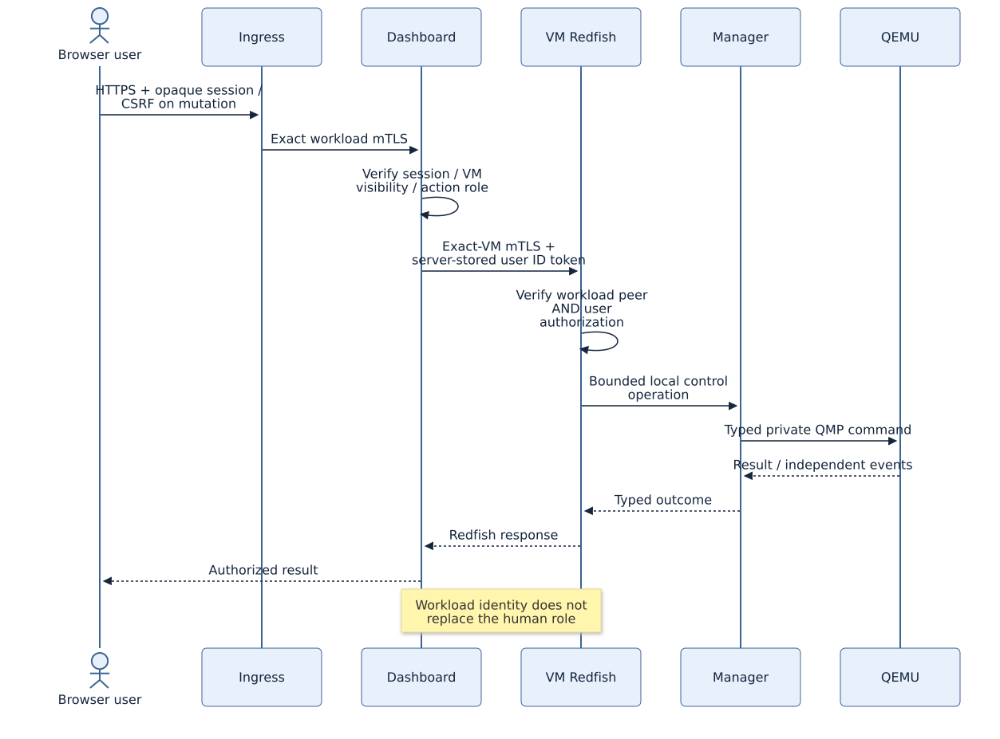
The dashboard uses its ServiceAccount for Kubernetes, so it is a trusted
application deputy. It does not impersonate each browser user at the API
server. Creator annotation admission and narrow update policy constrain that
authority; the application still must perform its own checks. Similarly,
Kubernetes RBAC does not automatically authorize a native Redfish action.
Upstream Kubernetes explicitly separates authentication, authorization and
admission (API access control).
Container identity is deliberately finer than Pod identity
Manager, BMC and Redfish have distinct service identities/enrollment even
when they share a Pod. Management workloads verify exact VM-UID-bound service
IDs; the source and migration target managers intentionally share the same
VM manager identity during handoff. That SVID proves the registered VM
workload, not which human requested an action or an independently authorized
migration UUID. Temporary policies and protocol state provide additional
confinement. (S11, S20.)
SVID validity/rotation, user-token expiry and local session lifetime are
independent controls. A signed OIDC token is not encrypted. A mounted Workload
API socket does not prove every listener uses mTLS. The connection atlas
records each transport and its actual authentication boundary.
Guest identity is another principal
The optional guest path provisions VM-bound software-vTPM credentials, attaches
read-only identity media and starts an in-guest SPIRE agent/relay. Registered
selectors identify code inside that guest. The relay is a bounded opaque byte
transport to a fixed upstream; it does not terminate the agent/server TLS or
lend the manager's SVID to guest processes. (S23, S24.)
A software TPM provides a stable interface and identity lifecycle. It does
not hide secrets from the node, QEMU, manager or privileged storage
administrator. The retired SVSM/confidential-computing experiments are not the
security model of this active path.
Name reuse is an identity event
VM names are human handles; immutable VM UIDs and random launch IDs scope
runtime identity and created resources. Access grants are not cleanup
ownership. Removing a group from a VM's current console grants must not lose
the authority/evidence needed to clean up the group actually created by that
launch. Conversely, an added grant must not authorize deletion of an existing
platform/other-launch group. The audit records the verified fixes
as they land.
Authorization metadata is public. Protect its writers with API policy; do
not present a label or launch annotation as a cryptographic credential.
Revocation and finalization must also account for already issued credentials
and the availability/expiry semantics of the issuing service.
Authority across resource lifetimes
A VM operation crosses several owners: human identity, declarative intent,
runtime process, kernel resource and storage export. Each crossing needs a
reference that still identifies the intended resource when the effect occurs.
This is a useful architecture-review perspective alongside the service map.
Match the reference to the responsibility
Entry / name
Authority used for the effect
Lifetime / recovery boundary
Human login
Verified issuer/audience/subject plus VM action role
Token/session expiry and application authorization
VM name
Immutable CR UID and accepted spec
A new same-name VM gets a new identity
Pod name
Exact Pod UID/controller relationship and current API state
Conditional patch/delete must not affect a replacement object
State claim name
PVC UID, VM-bound initialized state, lease and driver attachment contract
Retain/recover the intended identity rather than silently initializing another
Dashboard launch label
Recorded launch/VM/claim/group provenance under protected API writers
Cleanup of created resources is separate from current access grants
Local socket PID
Original connector pidfd, validated cgroup/Pod and held proc directory
Dead/reused numeric processes cannot substitute another actor
Current anchor process
Observed Running container ID joined to Pod UID and direct trusted cgroup
An older live same-UID process cannot substitute its namespace or mount
Namespace path
Already-open namespace descriptor from the validated current anchor process
Entry/FD grants use that resource through completion
Ready anchor Pod UID
Current namespace token backed by a held resource
A same-UID sandbox replacement invalidates stale readiness and queue binding
Descriptor-bearing reply
Complete bounded frame plus owned SCM_RIGHTS resources
Fragmentation, parse errors and truncation cannot lose track of installed FDs
Mounted VPN file
Read relative to the validated current process, with a bound
A later PID path cannot select another mount/root
Applied VPN generation
Digest and parsed plan from the same captured bytes
New desired bytes and late round results cannot retag an older applied effect
Local Cilium provider
Original protected-socket peer and held mount/PID/root handles
A writable process name or later PID path cannot choose privileged tool execution
Cilium endpoint name
Verified VM/NIC labels and unique CNI attachment ID
Name reuse after lookup cannot retarget mutation to a new attachment
Guest address
Owned pool/endpoint and controlled route/handoff state
Standby/active authority and route retirement are explicit
CHAP login
Exact export generation plus required hard fencing
Authentication does not establish that an old writer is gone
Downloaded image digest
Verified standalone source and independently sealed raw generation
Metadata cannot extend integrity to unverified backing/data inputs
Event sequence
Manager epoch plus sequence/gap/drop information
Bounded observations have restart/retention limits
The references here are not all credentials. A launch ID is public provenance;
a namespace descriptor is an OS capability; a storage generation participates
in a durable backend protocol. Their enforcement owners are different.
Source: boundary contracts, evidence and
the audited repairs.
Follow the local attachment case
The caller connects to a Unix socket. The kernel supplies its original peer
process handle. netd opens that process's proc directory, validates the host
unified cgroup and checks the API-owned VM relationship. It authorizes only
the VM's own NIC. The anchor's process and namespace are separately selected
and held; the helper enters that already-open namespace on a worker and grants
the resulting queues. Guest packets then use the kernel datapath independently
of this control connection.
The audit found both a classification error (a host scope's name looked like
a Pod UID) and a lifetime gap (a numeric PID/path could change between check
and use). Exact cgroup parsing addresses the former; held process/namespace
descriptors and the original peer pidfd address the latter. These are local
kernel/Pod authority checks, separate from the node-to-node SPIFFE conntrack
connection and the human's OIDC management role.
The recovery perspective follows same-UID namespace changes and
local descriptor-bearing frame failures. A07/A08 record those repairs.
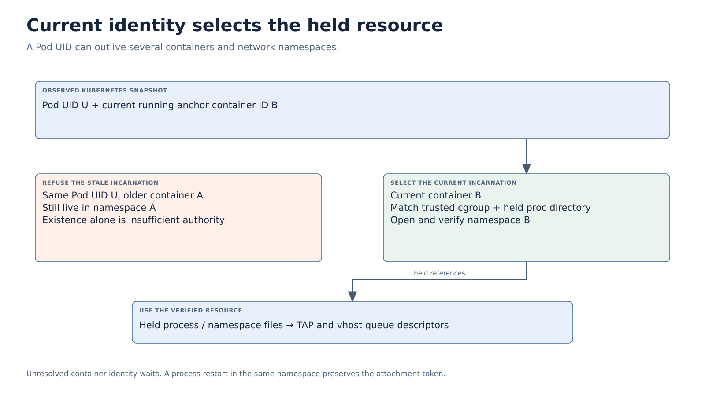
A11 binds resource discovery to the observed running anchor container. Running
and Ready answer different questions; see Kubernetes Pod lifecycle.
The separate namespace token changes only when the actual kernel namespace
changes, so a process refresh in the same namespace need not replug a NIC.
Apply the same review to cleanup and images
State-PVC adoption and access-group deletion must follow the resources the
launch created, even when current grants change. Object UID/resourceVersion
preconditions bind a write to what was checked. Image metadata must stay
inside the integrity boundary of the verified input. Storage replacement
requires backend evidence about the old writer, not just a missing API object.
Those source repairs are recorded as A01/A02/A04; local process repairs are
A05/A06 in the audit.
Use this perspective in the OpenStack comparison
The target moves responsibilities to Kubernetes, manager, Cilium/netd and a
scoped storage service. Those owners still have to preserve identity and
authority across retries, restarts, migrations and deletion. Removing Nova,
libvirt, Neutron or Keystone does not complete those contracts by itself.
The comparison should show both the simpler ownership map and the concrete
seams that make it work. No claim about the other cluster's internal process
handling or identity federation is inferred from this source review.
Keep desired input separate from applied observations
A mutable desired file may advance while a local operation is applying a
captured snapshot. Parse and fingerprint the same bounded bytes, then record
the generation whose operation succeeded. Dependent work such as port renewal
uses that applied generation. A12 covers the source repair and its private
late-completion/snapshot regressions.
This fingerprint is a generation reference, not authentication. The API's
conditional status write separately identifies the observed Pod; it does not
make the OS, remote provider and API one transaction.
Authenticate the provider as well as the requester
Exact-node TLS authorizes the network conntrack peer. It does not establish
which local process supplies the privileged tool environment. A14 uses the
protected local Cilium socket's original peer and held namespace/root handles
for that second question. It preserves the scoped conntrack parser and its
streaming-memory bounds.
Verify a logical owner, then address its immutable attachment
A13 separates lookup from effect: a CEP name locates an endpoint, while the
verified unique attachment identifies the mutation target. Caller admission
and resource ownership checks both remain necessary.
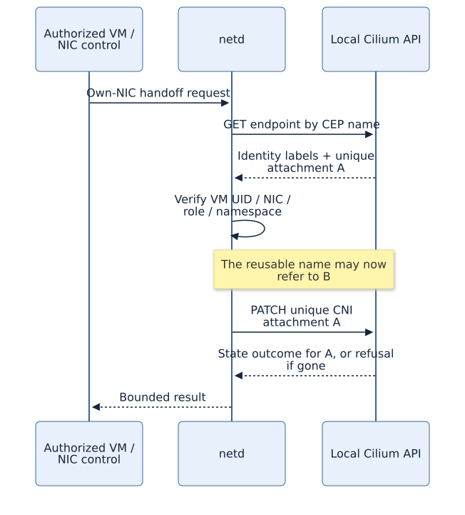
One system, several architecture maps
A service replacement table, a Rust dependency graph and a Pod diagram answer
different questions. Read them together when explaining how qrab replaces
OpenStack responsibilities.
Start with the question the diagram answers
View
Useful question
Example
Common mistaken inference
Responsibility
Who must make the operation correct?
Kubernetes places; operator reconciles; manager owns local QEMU
A small manager alone replaces every Nova duty
Deployment
Where does a process run?
QEMU is inside the manager container; a NIC anchor is another Pod
Every Rust crate is a deployed daemon
Dependency
Which code contract is reused?
QAPI types/protocol feed manager; management services reuse its bounded API
Importing a Rust type grants access to production QMP
Authority
Who can act on the resource?
Exact-VM service admission and a human role are separate checks
A workload certificate grants every user action
Payload
Where do bytes flow?
Guest block I/O goes from QEMU libiscsi to LIO
The operator proxies disk or packet payloads
Recovery
Which incarnation still owns it?
Pod UID, namespace token and disk export generation
A name or Ready flag proves current ownership
Evidence
What was actually established?
Source, manifest, local peer fixture, named live observation
A passing local test proves deployed guest health
The code map inventories all workspace crates. Generated QAPI
types and transport libraries are linked code, not additional cloud services.
The operator renders the manager's configuration contract without depending
on the manager crate. BMC/Redfish reuse control types and call the bounded
manager API; manager retains the private QMP session.
Assign operational ownership explicitly
These are responsibility categories for a team to assign, rather than an
assertion about the organization's current staffing.
Operational owner
Remains responsible for
qrab integration boundary
Kubernetes platform
API availability, admission/RBAC, scheduling, kubelet/runtime and container resources
VM CRDs, rendered Pods, device injection, watch/retry semantics
Per-VM manager and its authenticated management services
Network platform
Cilium endpoint/policy behavior, FRR/BGP, reachability and supported handoff integration
Per-NIC address/label intent and node-local TAP/FD operations
Storage platform
Durable bytes, exports, hard fences, retained identity volumes, backup/restore and destruction policy
Scoped storage verbs, generations, CHAP and reclaim records
Identity platform
OIDC directory/keys, SPIRE enrollment/rotation and trust-domain policy
Human verification, exact service peer admission and VM roles
Workload owner
Guest configuration, application consistency, guest-agent cooperation and recovery acceptance
Guest NIC/seed contract, approved agent operations and application tests
Release owner
Source provenance, immutable images, identity pins and rollout evidence
Source merge, image publication and cluster rollout remain separate steps
The same person can hold several responsibilities. The boundaries still need
to be explicit so an incident or change has a clear owner.
Explain the OpenStack change as a reassignment
Nova's orchestration and placement responsibilities move across Kubernetes,
the operator and manager. Local libvirt supervision moves to manager.
Neutron/OVN responsibilities move across API intent, address/anchor lifecycle,
netd, Cilium policies and FRR route distribution. Existing human and workload
identity systems take their respective roles when Keystone leaves the target.
Glance/Cinder replacement work has an implemented foundation and an explicit
remaining workload contract. The storage platform still owns durability and
fencing; a smaller API surface does not implement those guarantees by itself.
Use the replacement map for the service-by-service view.
Keep the two clusters distinct
The user's OpenStack services are containerized in another Kubernetes cluster.
That cluster's Cilium, frr-k8s/BGP, host-cgroup libvirt VMs and OVN guest fabric
are the supplied baseline. The qrab source and native-cluster records describe
the other side. A common component name does not establish identical release,
configuration, policy or performance in the two clusters.
No direct OpenStack cluster inventory, storage backend discovery or workload
measurement is implied by these maps. The transition plan
lists the evidence needed before retiring a component for a particular
workload.
Recovery: follow the owner, resource and incarnation
The useful recovery question is which owner can still act on which resource.
A name, a Ready condition, a controller restart and a missing Pod each answer
only part of it. This perspective follows the boundaries repaired during the
audit and connects them to the larger VM lifecycle.
Keep these lifetimes separate
Resource
Stable reference
What can change independently
VM intent
Immutable VirtualMachine UID
Name reuse creates another VM; generation changes its desired spec
VM Pod
Pod UID and node binding
Container restart; manager/QEMU process restart
Manager session
Local process/session and event epoch
A later session can reuse a path or socket name
NIC anchor
Pod UID plus held network namespace identity
CRI can recreate the sandbox while preserving the API Pod
TAP queues
Open kernel descriptors
API objects, daemon processes and namespace paths can disappear
Firmware/vTPM state
VM-bound initialized state and its lease
A guest power cycle replaces child processes while retaining identity
Guest disk export
Backend export generation and fencing state
API deletion or node observation does not establish writer exclusion
Status
Exact object UID/version and observation time
The resource can change before a delayed observation is published
The authority view explains how these references authorize
effects. The storage view explains why a state lease and a hard
disk fence remain different contracts.
Case 1: a NIC sandbox changes beneath a running VM
Discovery uses the current running anchor container identified by the Pod
snapshot, rather than the lowest live PID under its UID. It waits through
unresolved container startup without requiring the Pod readiness gate first.
QEMU holds queue descriptors for a particular kernel namespace. Keeping the
same API Pod UID does not move those descriptors into a replacement sandbox.
netd therefore identifies a plumbed attachment with an opaque token containing
the Pod UID and the held namespace's device/inode identity. Its open namespace
file pins that resource while the ready context refers to it.
When the held process no longer occupies that namespace, netd invalidates its
cached readiness and resolves the replacement. A healthy DHCP socket is reused
if the namespace stays the same; a changed namespace retires the old worker. Grant and probe use the same verified context. A netd restart
observing the same namespace produces the same token, avoiding an unnecessary
VM-wide unplug cycle.
The manager compares tokens. On a change it requests device removal, waits
for guest release, removes the old QEMU backend, obtains new descriptors and
attaches the NIC with the same configured MAC and root port. This is NIC
recovery with guest hot-unplug cooperation; it is not a promise of lossless
traffic during a sandbox failure. The VM process does not need to restart.
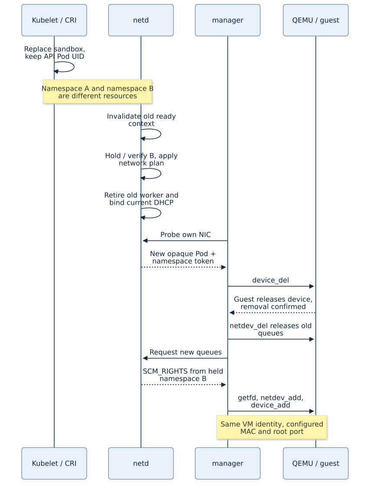
The source and regression evidence are A07 in the audit. The
kernel fixture exercises real throwaway namespaces and held files. The manager
fixture exercises QMP ordering against a stand-in; neither proves a particular
guest OS's hot-unplug behavior or a live Cilium/BGP path.
A10 also separates lease changes from namespace changes. A healthy responder
reads the latest complete applied lease without rebinding its socket. Setup
must successfully bind before readiness is published; worker exit invalidates
that readiness. These changes affect subsequent DHCP answers, not a forced
guest renewal or static network configuration.
Case 2: the local attachment service becomes unavailable
An established queue can outlive the process that originally granted it.
netd's restart does not itself revoke QEMU's existing descriptors. New grants,
endpoint handoff and other node control still need the service to recover.
The Unix socket carries bounded control frames and descriptor grants. It
does not carry guest packet payloads. A reply can arrive in several stream
reads, and its descriptors can accompany an early or later fragment. The
receiver must own every delivered descriptor before parsing or refusing the
frame, including the retained subset of a truncated ancillary message.
The repaired reader enforces a total read deadline and byte/descriptor bounds.
A full local listen queue fails promptly for retry. Parse errors, refusal,
truncation and count disagreement close received descriptors. Earlier agents
that close after a complete unterminated JSON reply remain readable; new
senders terminate the frame explicitly. A08 records the failing-before and
passing-after private-socket fixtures.
Case 3: the manager is healthy and the guest is off
An in-place Redfish Off stops the guest's QEMU/swtpm run while manager stays
reachable. Power On creates new children using the intended retained identity.
That healthy management state differs from setting spec.running: false,
which removes the VM Pod, and from an unexpected runtime failure.
Use the manager's power/process evidence and current VM status together.
Container readiness alone does not prove that guest code is executing.
See the power lifecycle and operations matrix.
Case 4: the old node cannot be reached
The API can stop observing a process while that process can still write to a
disk. Native-disk recovery preserves the old ownership binding until the
documented clean-exit evidence or a hard backend fence permits replacement.
Force-deleting a Pod, expiring a local lease or changing a desired node does
not substitute for that backend barrier.
The small firmware/vTPM filesystem volume has its own attachment and retained
identity contract. Recovering that volume and fencing a guest LUN need their
respective owners. A migration uses its explicit source/target adoption
protocol rather than treating two visible Pods as two independent VMs.
Case 5: an observation arrives after its object changed
A delayed result can be accurate about the resource it inspected and wrong
for the resource now occupying the same name. Conditional API writes must bind
the result to its observed object. On conflict, use current state to decide
whether to retry; do not publish the old result onto a replacement.
The node condition writers now carry the observed Pod UID/resourceVersion.
A rejected status write is retried from fresh watch state without repeating
successful kernel plumbing. A09 records the source, fake-API regressions and
non-persisting server dry-run verification.
This is the same review pattern as PVC adoption, external-group cleanup and
local process handles. The matching resource reference changes by domain;
the requirement to preserve its meaning through the effect remains.
Compare the operating models
In the supplied OpenStack deployment, Nova/libvirt coordinate VM ownership
outside a VM-specific Pod cgroup, and OVN owns guest attachment. In qrab,
Kubernetes/operator, manager, netd/Cilium and storage each own narrower parts
of recovery. The comparison should identify these owners and the evidence
they require, rather than imply that removing a service removes the failure
mode it previously handled.
Continuity: what survives a restart, restore or deletion?
A useful recovery unit is larger than a root disk. The target needs an
explicit contract for application data, VM identity, declarative intent,
network ownership and credentials. Current source implements several pieces;
a complete workload backup/restore product remains work to finish.
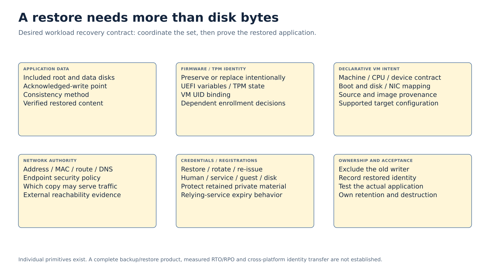
Preserve the right state for the intended operation
Operation
Intended continuity
New incarnation / separate decision
In-place power cycle
Same VM UID, intended retained UEFI/vTPM identity and disk bindings
New QEMU/swtpm children; guest application restarts
Container or Pod replacement
Same VM intent and proven durable state, subject to safe ownership
Process/Pod incarnations change; old writer exclusion must be established
NIC sandbox replacement
Same configured guest NIC identity and address intent
Held namespace/queue incarnation changes; guest hot-unplug cooperation is required
Same-VM live migration
Same VM UID, transferred supported identity/runtime state and shared disks
Exact target adoption and network ownership transfer
Restore into a new VM
Recovery behavior must be specified
New UID cannot casually adopt another VM's bound identity claim
VM deletion
Retention/destruction follows each resource's owner
API object disappearance is neither universal erasure nor universal credential revocation
The recovery view traces the implemented process/namespace
mechanisms. The storage view distinguishes guest LUNs from the
small firmware/vTPM state PVC. Neither a lease on that PVC nor Kubernetes
object deletion is a hard backend fence.
Design the backup artifact as a coordinated set
This is the desired recovery contract, not a new implemented export format.
Part
What a usable restore procedure must establish
Application data
Included disks, acknowledged-write point, consistency method and verified restore
Firmware / TPM state
Intentional preservation or replacement of identity, boot variables and dependent enrollments
VM intent
Supported machine, CPU/device/boot settings, disk/NIC mapping and source/image provenance
Network
Addresses, MACs, policy and which environment may advertise/serve them
Credentials / registrations
Which must be restored, rotated, re-issued or removed; recovery copies remain protected
Ownership record
Old writer exclusion, exact restored identity and authority to destroy retained copies
The guest agent provides bounded freeze/thaw and other allowed operations.
It does not coordinate an entire application or make a cross-disk snapshot
atomic. The storage service provides scoped disk/image primitives and hard
fences, rather than a complete application backup workflow. (S13–S15, S22.)
Define recovery time and data-loss objectives for the actual workload, then
measure them with restore drills. This investigation supplies no RTO/RPO,
availability or performance numbers.
Deletion has several revocation clocks
Authority
Relevant lifecycle
What removal alone does not establish
Human browser session / OIDC bearer
Session and token lifetime, role verification and application policy
All existing remote sessions or tokens instantly cease to exist
Calling service SVID
Workload enrollment, rotation/expiry and exact peer admission
A role change is a universal service-certificate revocation
Guest registration / agent
Entry reconciliation, guest stop, agent eviction and certificate expiry
Deleting an API entry retroactively invalidates every already-issued credential
Disk export
Hard fence and new generation/CHAP on recovery
A missing Kubernetes Secret closes an existing target session
Retained backup
Protected copies and explicit destruction authority
Deleting the live VM destroys copied data or private identity material
These are different mechanisms, not one global logout operation. Claims about
an already-issued credential need the relying service's actual validation and
connection-lifetime behavior, not just a control-plane deletion event.
Credential cleanup must also preserve object ownership. A15 in
the audit repaired a retry that could delete another VM's colliding
Secret name. The store now tests the expected VM/disk metadata and deletes
only the checked UID/version, without Secret GET or password readback. This
API cleanup still remains separate from hard-fencing a disk session.
Optional guest identity: follow the real deletion chain
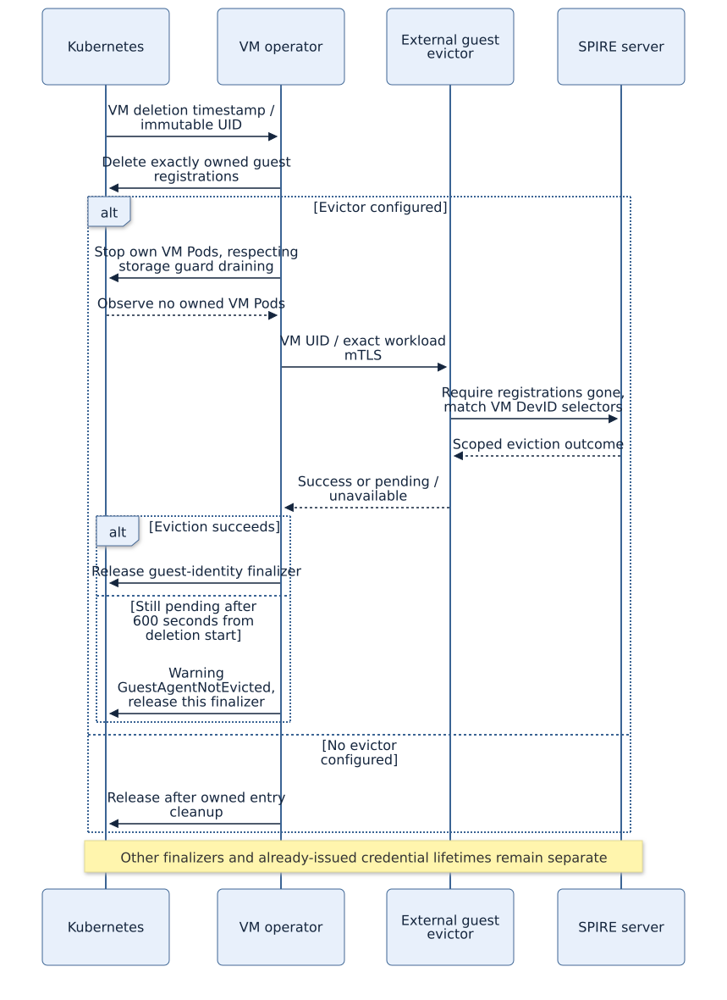
For a VM with the guest-identity finalizer, the operator deletes its owned
ClusterStaticEntries. With configured evictors it waits for the VM's Pods to
go, leaving storage-guard draining to that owner, then calls the exact allowed
SPIFFE-authenticated evictor. The external evictor service lives outside this
repository. Its documented contract scopes eviction to the VM's TPM DevID
selectors and refuses while the related registrations remain.
The source retries while pending. After 600 seconds from deletion start,
the guest-identity finalizer can release with a GuestAgentNotEvicted Warning.
Without configured evictors, only the entry cleanup is performed. That
finalizer's release is not a successful-eviction claim, and other finalizers
still retain their independent responsibilities. (S23,
the subsystem guide.)
The dated native-cluster record in the guest identity guide
reports a 2026-11-17 test in which the selected test agent disappeared within
ten seconds and two unrelated agents stayed unchanged. That is evidence for
that named rollout/test. It is not evidence of instantaneous revocation of
every previously issued workload SVID or acceptance on another cluster.
Present the continuity decision explicitly
When retiring Glance/Cinder or replacing Keystone duties, show both the live
workflow and the retained recovery obligations. The target can have a much
smaller service surface while retaining disciplined data, identity and
revocation operations. Use the task translator
for daily work and the cutover story for moving between
clusters.
What the presentation can prove
Use the strongest claim supported by the particular evidence collected. Code
review, a manifest and a real-peer fixture establish different things; adding
them together does not automatically establish a live workload outcome.
Evidence gathered during this investigation
Check
Actual scope
Useful presentation claim
Remaining limit
Default runtime check
Formatting, workspace tests, generated CRD/policy comparisons and strict Clippy
Repaired source passes the repository's normal local checks
No guest boot, cluster, ZFS/LIO or real Cilium datapath acceptance
Pinned QEMU image fixture
QEMU 11.1.3 qemu-img, benign local files, raw/standalone qcow2 and external dependency cases
The importer refuses extra image inputs before invoking QEMU
No production image publication or live import/export test
Real QMP smoke
Local pinned 11.1.3, machine none/TCG, private monitor sockets; compact/pretty and legacy/object monitor frontends
Generated schema/types and protocol behavior work against that real peer
No firmware, KVM, guest, disk, network or migration workload
Real QGA smoke
Local qemu-ga 11.1.3, private listener/temp files and explicit RPC allowlist
Sync, info/ping, a 2 MiB typed file read and allowed exec/status work against that peer
No in-guest agent rollout or application consistency proof
Real manager launcher
Current 11.1.3 PC build, TCG, pinned cached demo assets and temporary runtime
Actual guest boot marker, manager probes, SIGTERM/QMP shutdown and child reaping pass
No Kubernetes placement/cgroup admission or KVM proof
Real UEFI/vTPM lifecycle
Same local PC build, OVMF and swtpm 0.10.2, temporary retained state
Endorsement identity survives replacement; TPM death fails the VM; corrupt retained state is refused
No hardware TPM, Secure Boot enrollment, cluster state-PV or backup product proof
In-guest qrab agent
Direct-kernel demo with one explicit disposable ext4 fixture
Exactly one selected filesystem freezes/thaws, frozen update is refused, later fixed update hook succeeds
No multi-disk/application-consistent backup or arbitrary guest execution claim
Real two-manager migration
Pinned local image assets, current manager/test binaries, TCG, private fixture Workload APIs and no guest NICs
Guest resumes at target; source exits migrated; later target cold boot preserves the source TPM identity
No Cilium handoff, native guest LUNs, production SPIRE or cross-cluster/OpenStack migration
Local KVM/container containment
Disposable rootless container, explicit KVM, current manager binary and pinned image assets
Manager/QEMU/swtpm are direct parent/children in one constrained cgroup; guest boots and all original processes exit cleanly
No Kubernetes scheduling, device-plugin, namespace/tenant, Cilium/BGP or guest-LUN certification
Original socket-peer fixture
Private child process and Unix connection on a supporting local kernel
Peer authority does not become a replacement numeric process after exit
No live VM grant or node rollout
Kernel networking fixtures
Throwaway user/network namespaces, real TAP/FD transfer, routes, DHCP lease updates/bind failures and namespace replacement
The exercised local kernel mechanisms work in isolated fixtures
Dummy uplinks replace Cilium; the later T05 run also exercises WireGuard/NAT-PMP
Manager NIC fixture
Stand-in netd and QMP peers, actual manager reconciliation
Namespace token change causes ordered NIC-only detach/attach with the same MAC/root port
Guest hot-unplug and traffic continuity require their own acceptance
Private netd socket faults
Fragmented JSON, descriptor timing/count/truncation, malformed input, dribble and full listen queue
Frame bounds and descriptor cleanup are regression-tested without a node daemon
No production endpoint handoff or remote packet test
Limited native observation
netd host cgroup view, node kernel metadata and no-op status server dry-runs
The recorded prerequisites and API conditional-write semantics matched at that time
Not a fresh health audit or proof of every feature/image
OpenStack comparison baseline
The user's description plus primary upstream service documentation
The diagrams compare the supplied ownership model and general service duties
The other cluster's release, backend and workload behavior were not inspected
The final combined runtime gate used RUST_TEST_THREADS=4 on the busy local
host. The normal command and its assertions were unchanged. The audit records
the isolated timing rerun and the separately repaired provider setup.
Source/test links and upstream references are in the evidence register.
The audit identifies which repair each regression supports.
Reproduce the explicit peer checks
The maintained testing guide supplies the full commands and
requirements. The essential protocol checks are:
The binaries used here came from the locked local Gitea QEMU checkout,
canonical source preparation, verified dependency archives and the locked
local patch. Downloads were disabled during configuration. This audit did
not advance the QEMU source baseline.
Explicit manager and guest checks
The maintained pod_runtime, pod_uefi and pod_guest_agent ignored tests
also ran against a local QEMU 11.1.3 build with PC devices, VNC and TPM enabled.
They used TCG, the default in those fixtures. Enabling KVM in a build is
not evidence that these tests exercised KVM.
Guest kernel/initramfs, boot disk and OVMF inputs were copied from the local
pinned manager image
sha256:2f2ab6fad013a7c7635185668388603b50acbbcb657939c2295fe4dc0f6e79e9
(source 490d988dda4e3cbbf91b5208cc8169aea8294afc). The guest kernel was
6.12.117+deb13-amd64. No new image was built or published for these checks.
Input hashes and exact commands are in qrab towl under the architecture work.
The original guest-agent fixture passed while reporting zero frozen
filesystems, as the old guide allowed for a RAM-only demo. That result proved
the control/status path, rather than a real FIFREEZE. The strengthened test
formats only its private 64 MiB file on the host. An exact opt-in argument,
UUID, label, filesystem type and capacity guard a test-only guest mount before
agent startup. The test targets that mount and requires exactly one frozen
filesystem. It then verifies the frozen-operation gate, matching thaw count
and a successful fixed update hook. Ordinary guest disks are never formatted
by this fixture path.
The explicit local run replaced only the init record in the copied
initramfs with the checked source; the other 113 records and their metadata
were unchanged. It failed with the old zero-work fixture and passed with the
new mounted one. This is a stronger launcher/guest test, not a new application
backup guarantee. Reproduction requirements remain in
the guest-agent guide.
The existing pod_migration fixture also passed in a disposable local
container using the pinned image's QEMU/guest/OVMF and current manager/test
binaries mounted read-only. It transferred a running guest between managers,
observed source completion and target guest-agent response, and deliberately
cold-booted the target afterward to verify the source endorsement identity
was persisted. Its service certificates came from private fixture Workload
APIs. The container had no external network and the VM had no guest NICs.
This tests the runtime state/identity transfer, rather than netd/Cilium route
handoff or backend storage fencing. One fixture's emitted downtime is not a
performance measurement or an SLA.
Local KVM and container containment
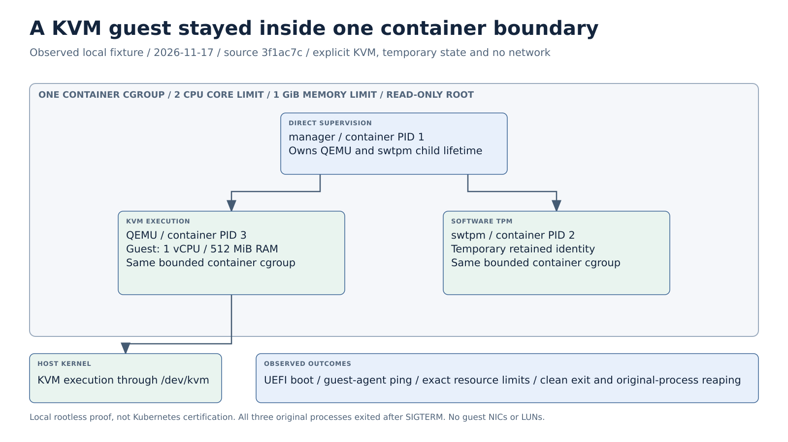
A separate local fixture explicitly selected KVM. It ran the current manager
binary in a disposable rootless container with the pinned image's QEMU,
OVMF/swtpm and demo guest. The container had a read-only root, no external
network, no Linux capabilities, the caller's existing /dev/kvm access and
private temporary state. No cluster objects were created or changed.
The guest reported UEFI boot and its software-TPM endorsement identity, and
the manager's readiness and guest-agent ping succeeded. Host process records
showed manager as container PID 1 and QEMU/swtpm as its direct children, all
in the same container cgroup. The bounded resource API reported the imposed
two-core and 1 GiB container limits. These are limits in a small fixture,
rather than workload sizing or performance recommendations.
After SIGTERM the container exited with status zero. pidfds held before the
stop confirmed all three original processes had exited, avoiding a numeric
PID-reuse assumption. The owned container was removed afterward. The first
harness attempt queried the agent too early; the successful fresh-state run
used a bounded connection/ping wait. Manager readiness and guest-agent
connection remain separate observations.
This strengthens the source-derived process/cgroup comparison. A local
libpod cgroup is not a Kubernetes placement/device-plugin acceptance test,
and the VM had no guest NICs or native guest LUNs. The OpenStack side remains
the deployment model supplied by the user, rather than an inspected cluster.
The networking fixtures can run in throwaway user/network namespaces where
the kernel permits it. Read the emitted skip reasons: a test function that
returns early is not evidence that its privileged or optional path ran.
Earlier runs exercised four fixtures and skipped two VPN cases for missing
tooling. A later explicit run with temporary wireguard-tools 1.0.20260223
executed all six without skips: namespace selection/lifetime, TAP descriptor
transfer, forwarding routes, updated DHCP, WireGuard reachability/kill-switch
and tunnel-only NAT-PMP mapping. The provider and links were throwaway local
fixtures, not a real VPN subscription or Cilium/BGP path. Tool source/version
and checksums are recorded in qrab towl; no host tool installation or service
was required.
Reject findings that fail the real contract
The audit initially suspected that ingress: [{}] in two CiliumNetworkPolicy
examples allowed all incoming traffic, by analogy with Kubernetes
NetworkPolicy. Tests of the exact examples through the local Cilium fork's
production policy repository denied unrelated ingress. Both examples were
preserved. Its auxiliary step-by-step simulator disagreed for those inputs,
so that simulator was not treated as the sole oracle.
This was a rejected finding, not a repaired production defect. The distinction
matters when replacing familiar OpenStack mechanisms: a similar field name
or diagram shape does not establish the same contract in another system.
Detailed source/reproduction notes are in qrab towl
work/cilium-default-deny-ingress-policy.
Desired workload acceptance remains explicit
Before moving a real workload, prove its boot/firmware identity, required
management roles, network policy and route behavior, persistent disk recovery,
backup/restore and application consistency. Exercise the intended node-loss,
migration and deletion procedures using the chosen release/configuration.
Measure performance or cost before making a quantitative improvement claim.
Those are desired acceptance criteria. The local tests above make particular
implementation contracts reviewable; they do not turn unperformed acceptance
work into a completed result.
Lifecycle view: follow one VM across its owners
The same VM has several independent states: declarative Kubernetes intent,
Pod lifecycle, manager/QEMU power, disk export ownership, NIC endpoint
ownership and user sessions. Presenting all of them as one "running" bit
hides the recovery boundaries.
Launch
The API accepts a VM resource under auth/RBAC/admission. The operator rereads
the current VM, validates it and establishes controlled resource bindings.
For native disks, storage exports and an owner scheduling gate prevent an
untracked QEMU from starting. Kubernetes places and starts the manager Pod;
co-located anchors are created once its node is known. netd plumbs the NICs,
manager obtains their queue descriptors, acquires the identity lease and
starts swtpm/QEMU. Private QMP becomes the runtime control channel.
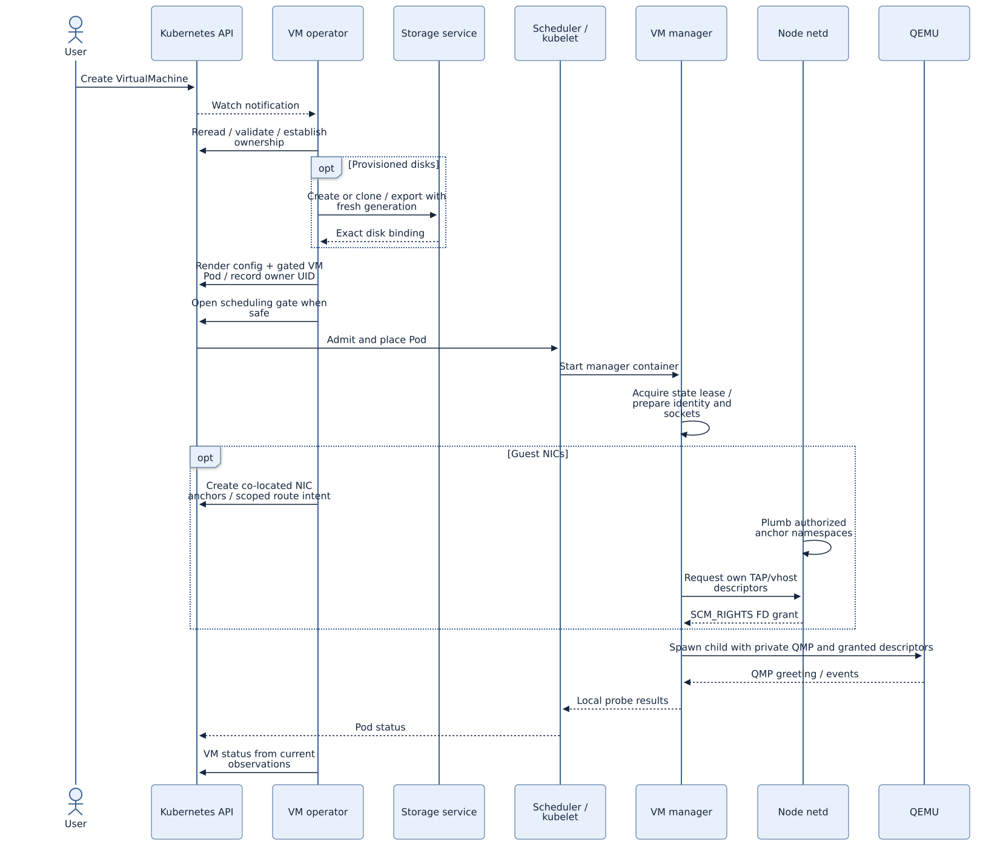
This is a compressed ordering, not a single atomic transaction. Projected
configuration, watches and retries can be delayed. A Pod with successful
probes proves manager/process liveness, not that the guest application has
finished booting. (S02–S06, S08–S10, S13.)
Clean ownership evidence or required backend fence
Migrated source
Ownership transferred
Source manager exits with migrated outcome
Operator adopts exact target
Power-cycle and restart operations must retain the intended identity while
starting new child processes. Native-disk QEMU termination that needed a hard
kill is not silently reported as clean release. State authority remains held
through child reaping. (S04, S05, S13.)
Grow resources
The operator plans growth against boot-time ceilings. Kubernetes must admit
and apply the manager container resources first. Manager reads projected
limits and effective cgroup capacity before QMP hotplug. The operator's
resize.phase=Applied reflects kubelet-side container resize, not a proof
that the guest has onlined every CPU or byte of RAM. Shrink or growth beyond
the supported ceiling uses a restart path. (S02–S04.)
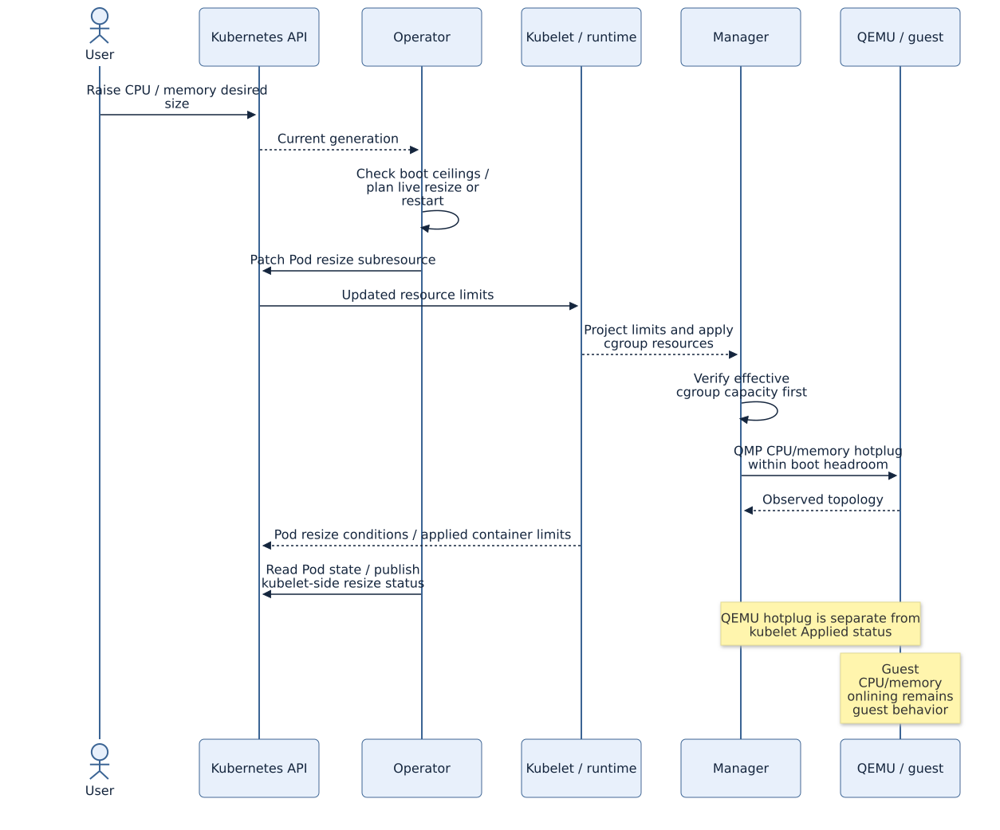
Disk growth has another chain: grow LIO/zvol capacity, project capacity intent,
perform QMP block resize, then let the guest grow its own partition/filesystem.
The operator does not open a network QMP endpoint for either workflow.
Move to another node
A migration resource is immutable and single-use. The operator validates
eligibility, target and auxiliary claims, prepares fenced target anchors,
empty identity state and target configuration. The target authenticates the
same VM source, prepares incoming QEMU and receives the state stream. The
final pause coordinates network ownership handoff. Exact target adoption
follows source completion evidence; cleanup does not fence the newly adopted
owner. (S11, S12.)
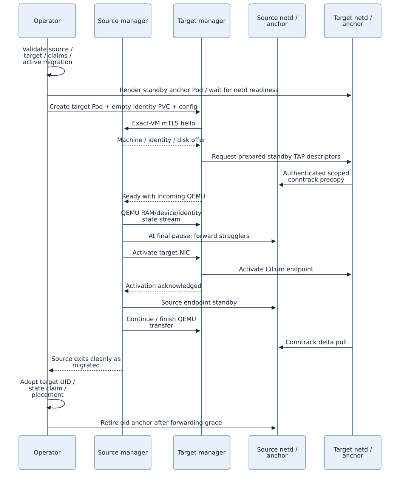
Shared disks are not copied. Unsupported firmware/management state and
auxiliary PVC sharing requirements remain admission limits. A powered-off
VM has no running guest state to live-migrate; there is no implicit cold-move
workflow. OpenStack-to-qrab workload transfer is a separate transition plan,
not this same-VM qrab live-migration protocol.
Delete
Deletion coordinates multiple finalizers. Native exports are fenced before
their credentials/resources disappear. Access groups and guest registrations
have their own owners. Only proven VM-owned state claims may be collected;
manual/unproven identity claims remain outside adoption. Source now supports
retiring deleted VM guest disks and a separate host reaper grace period.
Backing state-PV reclamation is a different storage-driver workflow.
Do not summarize this as "delete VM = destroy all data" or "delete VM = keep
everything forever." State the actual object, its proven owner, its retention
policy and its destruction authority. See storage,
the audit and subsystem runbooks.
Security review: trust moves; it does not vanish
The desired simplification narrows exposed VM-specific control and reuses
Kubernetes/Cilium/identity policy. It retains a trusted node kernel,
hypervisor, privileged attachment helpers and storage administrator. It is
not a confidential-computing design and does not promise hostile multi-tenancy
against arbitrary writers in the management namespace.
Assets and adversaries
Asset / invariant
Relevant threat
Boundary / mitigation to assess
A VM's memory, CPU and device state
Another workload or guest reaching control sockets
Confusing Pod identity with guest workload identity
Separate guest agent/vTPM/selector registration; opaque relay
Monitoring data
Query escalation or another VM's series exposure
Fresh API-owned VM/Pod inventory and fixed scoped history templates
Cleanup authority
Mutable access grants or labels widening deletion scope
Exact provenance, existing-controller protection and UID/resourceVersion preconditions
These controls need their actual implementations, tests and deployment
configuration checked; the table is a review model. Source references are in
boundary contracts, and confirmed defects/repairs are in
the audit.
Human, workload and local authority
Workload mTLS establishes the service peer. It does not authorize the human's
power/console action. OIDC claims establish a subject/group set; application
roles still decide the operation. Kubernetes protects declarative API changes;
the dashboard uses a ServiceAccount rather than automatic per-user
impersonation. The manager local socket trusts authorized same-UID peers,
so its sidecars are inside its bounded management authority.
Labels and annotations are public provenance under protected API write
rights. They are not secrets or independent proof against a namespace
administrator. A user allowed arbitrary Pod creation, exec or Secret mounts
in that namespace has substantially different authority from a VM user.
Do not describe those two tenancy models as equivalent.
Encryption ends somewhere
Protection
Endpoint / scope
Outside that claim
Frontend HTTPS
Browser/native client to ingress
The next backend hop unless separately secured
Workload mTLS
Exact admitted service peers on management/migration/conntrack paths
Human role, guest packet encryption, disk data at rest
Cilium Pod WireGuard
The verified configured managed Pod/node segment
Same-node local paths, host/world-origin cases outside its policy
Native MACsec
The documented node/gateway Ethernet peer segment
Local plaintext stacks and traffic beyond the peer
VPN NIC WireGuard
Anchor to configured provider peer
Guest-to-anchor plaintext and traffic after the provider
CHAP
iSCSI login authentication
Payload confidentiality or one-writer fencing
Unix socket permissions / peer credentials
Local process authority
Encryption or protection from privileged node administrators
A migration that cannot transfer management policy, attach auxiliary claims
safely or preserve identity must refuse before unsafe side effects. Unknown
old writers must remain blocked until fenced. A user request that names an
unowned resource must not silently adopt it. A timeout may mean the command
executed and its reply was lost; mutation retry policy must account for that.
The security goal is an understandable authority chain with tested refusal
paths. Fewer service names alone do not prove a smaller attack surface or
better security; exposure, privilege, dependency maintenance and recovery
semantics still need evidence.
Operator's view: failure domains and recovery evidence
qrab removes OpenStack-specific control services from the target, but
Kubernetes, QEMU, Cilium, FRR, storage and identity still fail independently.
The operational benefit to test is clearer ownership and fewer duplicated
control planes; lower incident rate or cost has not been measured here.
What an outage means
Failure
Likely architectural effect
Evidence to collect
Unsafe inference
Kubernetes API or operator unavailable
New reconciliation, placement and lifecycle changes pause
API reachability, operator logs/status age, current Pods
Every existing QEMU must have stopped
One manager/QEMU/swtpm fails
One VM loses execution/control; native storage guard may block replacement
Child exit, private manager status, exact Pod UID, storage state
A replacement Pod can attach just because the old object disappeared
netd restarts/unavailable
New attachment and handoff fail/wait; held kernel FDs may keep an existing datapath alive
Provision/fence/retire operations wait or report bounded failure
API verb outcome, export generation, journal phase
Existing disk I/O necessarily fails too
LIO/storage data path fails
Dependent guests can stall/error on I/O
QEMU block errors, target sessions, storage health, transport path
Operator reconciliation can repair missing durable bytes
IdP unavailable
New human login/key refresh may fail; existing sessions follow their expiry
Login/JWKS/session errors without logging tokens
Cached sessions grant indefinite access
SPIRE unavailable
New SVID acquisition/renewal and new authenticated connections may fail
Workload identity age/expiry and exact enrollment
A mounted Workload API socket proves healthy mTLS
Node lost/partitioned
Safe VM recovery depends on process/state/export ownership
Exact old UID, node status, hard-fence outcome
Node NotReady, lease expiry or force deletion proves old writers are gone
Prometheus/history bridge unavailable
Management and guest execution can survive without history
Scoped bridge discovery freshness, scrape/history status
Missing graph data means the VM is off
These are source-derived expectations, not an availability SLA. The
connection atlas and capture guide
identify the streams needed to distinguish control, packet, block and
identity failures.
Read-only triage order
Identify the immutable VM UID, active Pod UID/node, observed generation,
current phase, reason, power and migration status. Separate stale
observations from a fresh outcome.
Check manager process/probe evidence and whether QEMU exists. A live
powered-off management Pod is expected, not a stuck boot.
For a network symptom, identify the exact NIC anchor/endpoint/address and
traffic origin. Compare guest packets, management traffic and backend I/O;
they do not share one namespace or one encryption stream.
For storage replacement, read the export generation and old-owner state.
Preserve unknown ownership until clean exit or a hard backend fence is
established. Follow the existing storage recovery runbook.
For authentication failures, distinguish human-token/session expiry,
service SVID admission and API RBAC/admission. Do not test with an unrelated
privileged credential and call the user path proven.
For deletion, identify which finalizer still owns work. Do not strip it
merely to make the object disappear. Capture the corresponding external
cleanup/fence outcome first.
Acceptance after a repair
Verify the failed operation through its real entrypoint, then verify the
identity and ownership invariants it could have affected. A successful
Redfish power operation should preserve the Pod/identity when it is an
in-place cycle. A migration should preserve the VM UID, intended disks and
NIC addresses and leave no unintended active source endpoint. A storage
recovery should prove the old writer/export generation cannot still act.
Local unit tests, kernel netns tests, real-QEMU tests and live cluster tests
are different evidence classes. Tests that skip because privileges/tools are
missing are not live datapath proofs. Prefer the maintained check scripts and
record their actual scope, source revision and release digests.
Release boundary
Source checks and merges do not build images, enroll new workload identities
or roll a cluster. The image lock records source/digest pins; live inspection
and dated acceptance establish what is deployed. This architecture task does
not automatically authorize applying example VM bundles or recreating deleted
test VMs. Durable investigation and operational notes belong in qrab towl.
An OpenStack operator's task translator
The useful replacement for an OpenStack command is a task, its new owner and
the evidence that the task completed. qrab exposes Kubernetes resources and
VM-scoped management services. It does not expose a Nova, Neutron, Glance or
Cinder compatibility endpoint.
The OpenStack task names below follow the 2026.1 client reference.
They are vocabulary for the comparison, not a discovery of the separate
cluster's enabled features or API microversions.
Create, inspect and operate a VM
Familiar task
qrab entrypoint and owner
Completion evidence / important limit
Create server
Dashboard launch or an authorized VirtualMachine API request; operator renders controlled resources
Current VM UID/generation, storage binding, manager/QEMU state, NIC readiness and a guest/application check
Choose flavor
VM CPU/memory specification, boot ceilings and Kubernetes resource admission
Scheduled resources and effective container capacity; required NUMA/pinning/hugepage policy needs its own contract
Show server
VM status plus selected-VM dashboard/Redfish and manager-derived inventory
Separate desired generation, Pod incarnation, power state and guest-agent freshness
Check the selected action's outcome; a hard reset, guest shutdown and a new QEMU process are different events
Pause/resume
Authorized VM power/control action
Paused QEMU still exists and retains resources; application progress has stopped
Resize
Update the supported VM resource intent; operator/kubelet admit container growth before manager hotplug
resize.phase=Applied is kubelet-side evidence; guest CPU/memory onlining needs guest evidence
Live migrate
Immutable, single-use qrab migration resource
Exact target adoption, one intended network owner and preserved disk/state identity; eligibility is constrained
Rebuild, rescue, shelve or cold move
No general equivalent is established by this atlas
Define the required recovery/data/identity behavior before promising this workflow
Source owners are S02–S07, S11, S16–S19 and S22 in the evidence register.
The lifecycle view gives the sequences. Use the actual dashboard,
Redfish and CRD documentation for parameters; a mapping table should not become
an untested second command reference.
Connect and protect a guest
Familiar task
qrab entrypoint and owner
Completion evidence / important limit
Port/address assignment
VM NIC intent, address claims, co-located anchor Pods and netd
Exact VM UID/NIC/anchor incarnation, applied endpoint labels and guest address
Security-group membership
NIC security-group labels plus the platform's Cilium policies
Inspect the resulting policy and test the intended allowed/denied flow; a label alone does not enforce it
External reachability
Stable guest IPv4 /32, FRRConfiguration/frr-k8s and the upstream network
Accepted route and packets from the required origins; a BGP session alone is insufficient
Floating IP, tenant router, overlapping subnet or IPv6
Required semantics must be specified separately
The current stable-/32 model does not establish broad Neutron parity
Migrate an active NIC
Manager/netd and the supported local Cilium handoff fork
Attachment identity, transfer outcome, old/new routes and actual traffic; source support is not a lossless-flow guarantee
The management Pod and each guest NIC have different endpoint identities.
Guest packets flow through kernel TAP/vhost and Cilium; the netd socket grants
descriptors and carries control, rather than relaying packet payloads. See
networking and recovery. (S08–S12.)
Images, disks and failed nodes
Familiar task
qrab owner today
Completion evidence / important limit
Register an image
BaseImage/import controller, bounded inspect/write Jobs and the storage service
Verified source, explicit format, capacity and sealed immutable generation
Create disk from image
Provisioner and scoped storage clone/export verbs
Recorded origin/GUID, export generation and exact VM/disk CHAP Secret
Backend and QEMU capacities, then guest partition/filesystem growth
Attach/detach arbitrary volumes
No general interface is established here
Decide required attachment lifecycle, writer exclusion and retention semantics
Backup/restore
A complete workload product remains work to finish
Disks, firmware/vTPM identity, configuration, registrations and application consistency must be coordinated
Recover from node loss
Storage guard plus clean-exit evidence or a hard backend fence
Old writer exclusion before replacement; an unreachable node is not that proof
Delete VM
Separate access, guest-identity, storage and proven state-claim owners
Finalizer outcomes, fenced/retired disks and explicit state-PV reclaim policy
Destroy retained disk bytes
Separate administrator-only reaper after its grace period
Exact retired journal/GUID, absent export objects and successful backend destruction
Nova's evacuation procedure
also requires establishing that the old host is not operational. qrab's
corresponding safety question is explicit disk-writer exclusion, not merely
Kubernetes rescheduling. Automatic general evacuation is not established.
(S05, S13–S15.)
Replace the credential for the right question
Keystone's scoped tokens
carry authorization context for OpenStack APIs. The target distributes the
questions across existing systems:
Question
qrab authority
Who may change Kubernetes VM intent?
API authentication, RBAC and admission
Who is this browser user?
Verified OIDC identity and server-side session
May that user perform this VM action?
VM application roles enforced by the selected service
Which service is calling?
Exact allowed SPIFFE identity and rotating workload mTLS
Which workload is inside this guest?
Optional VM-bound guest SPIRE enrollment and selectors
May this QEMU access this disk export?
Scoped CHAP/export generation; separate from user login
The dashboard uses its own ServiceAccount for Kubernetes operations. It is
not per-user API impersonation. A valid SVID does not grant every human role.
See identity, authority and the
capability ledger for the remaining acceptance scope.
An operator's closing question
For each familiar command, ask: which object expresses intent, which owner
performs the effect, and which observation proves the workload result? If one
answer is missing, record the required contract. Do not hide it behind the
name of the service being removed.
Capability ledger: what must be true before retiring a service
This ledger describes the required replacement subset. Implemented is a
source claim, not a fresh deployment certification. Constrained means
known scope limits. Work remains identifies a product/operational contract
that this investigation has not established as complete. Feature gaps are
not silently reclassified as boundary bugs.
Capability
Source position
Remaining acceptance / limit
Evidence
Declarative VM lifecycle
Implemented
Prove target-cluster RBAC/admission and required tenancy/quotas
S02, S03, M01
QEMU supervision without libvirt
Implemented
Validate chosen release/machine/firmware and workload behavior
S04–S07
VM-specific container resources
Implemented
Required CPU topology, NUMA, pinning, hugepages and device-placement policies are separate scope decisions
S02, S04, S21
In-place power / management availability
Implemented
Distinguish guest off, paused, Pod stopped and runtime failed
S04, S06, S19
CPU/memory growth
Implemented / constrained
Boot ceilings, kubelet resource admission and guest onlining; no live shrink claim
S02–S04
Authenticated browser / Redfish / console
Implemented
Verify actual issuer/audience/role policy, expiry and deployed service enrollment
S17–S20
Human identity without Keystone
Implemented foundation
Agree API RBAC, VM application roles and namespace administration model
S16, S18–S20, M01
Workload identity / rotation
Implemented foundation
Platform SPIRE enrollment, service-specific peer policies and expiry evidence
S20, L01
Optional guest workload identity
Implemented / optional
Guest-image enrollment, selector policy, revocation/recovery and software-vTPM trust model
S23, S24, L02
Cilium-native guest attachment
Implemented
KVM + stable address range + netd + platform policy; host unified cgroup-v2 view, standard kubelet roots and SO_PEERPIDFD support (Linux 6.5+)
S08–S10
Guest security groups
Implemented foundation
Deploy baseline/allow policies; label membership alone has no enforcement
S08, M01
Stable externally routed guest IPv4
Implemented / constrained
/32 range and external route acceptance; no general floating-IP or overlapping-tenant network claim
S08
IPv6 / broad Neutron network parity
Work remains / outside current model
Decide required address/network/L2/router semantics before migration
S08, S09
Optional VPN NIC
Implemented / constrained
IPv4/one-peer contract, key lifecycle and provider dependency
S25
Same-VM qrab live migration
Implemented / constrained
Compatible machine/CPU/disks, supported management state and auxiliary claims
S11
Live NIC handoff
Implemented / fork-dependent
Local Cilium fork version contract, failure/rollback/conntrack limits
S08, S11, S12
OpenStack → qrab live migration
Not established
Use explicit workload conversion/cutover; no compatible live-migration API is claimed
S11
Cold moves / automatic node evacuation
Not established as general product
Define identity transfer, fencing and placement/recovery policy
S05, S11, S13
Image import / sealed generations
Implemented / constrained
Raw/qcow2 source contract, capacity, publication and distribution policy
S15
Image sharing / multi-site distribution / full Glance API
Work remains / outside current interface
Define only the subset workloads require
S15, U03
Provisioned VM root/data disks
Implemented
Exact backend enrollment, generation/fence behavior and capacity
S13, S14
CoW clone / online disk growth
Implemented
Verify origin/GUID, backend growth and guest filesystem behavior
Bounded runtime events/telemetry do not supply complete immutable audit retention
S06, S26
Operator horizontal HA
Not established
Current deployment is one replica/Recreate; evaluate coordination before adding replicas
S03, M01
OpenStack client/API compatibility
Not claimed
Consumers must change interfaces or have an explicitly scoped adapter
S02, S19
Full cloud feature catalog
Outside this comparison
Inventory actual Heat/Octavia/Designate/Manila/etc. dependencies rather than assuming absence
U01–U04
Workload acceptance record
For each workload, record its required features, evidence class, tested source
and image digests, observed outcome and remaining owner. Include boot/firmware
mode, CPUs/memory, guest agent, disks/backup, NIC addressing/routes/policy,
identity/access, migration/downtime expectations and rollback. A checked box
without its evidence should not authorize retiring the old provider.
The transition plan uses this ledger as a workload-specific
gate. It is an engineering acceptance condition, not an added human approval
gate on the already authorized source fixes and documentation work.
Transition view: move responsibilities and workloads deliberately
The OpenStack and qrab deployments are in different Kubernetes clusters.
This is not an in-place Neutron backend switch or a libvirt configuration
change. The transition must move workload data/configuration and explicitly
cut over authority, while the old environment remains available for the
defined rollback period.
Phase 1 — inventory the workload contract
For each workload, record what it actually uses: firmware/Secure Boot/TPM,
machine/CPU/device expectations, RAM/CPU growth, root/data disks, snapshots
and backups, network address/routing/DNS/security groups, metadata/cloud-init,
user/service/guest identity, automation APIs, observability and downtime
limits. Record the OpenStack release and backend details from that cluster;
they were not supplied by this repository investigation.
Use the replacement map to assign owners, then the
capability ledger to distinguish existing source support
from required additional work. Do not assume unused OpenStack services are
deployed, or deployed services are unused, without the inventory.
Phase 2 — prove the platform foundations
Foundation
Proof needed in the target cluster
Kubernetes
CRDs, protected namespace/API rights, admission, resource accounting and intended placement
QEMU/KVM/runtime
Pinned release/firmware, device injection, supported guest boot and clean lifecycle
Cilium/FRR
Address range, anchor identity, baseline policy, externally accepted routes, DNS and MTU
Cilium handoff fork
Version/upgrade contract and failure/rollback tests if live NIC migration is required
Identity
Correct issuer/audience, VM roles, exact SVID enrollment and rotation/expiry behavior
Images
Verified import and sealed-generation provenance, publication/retirement policy and capacity
Storage
Export/fence/rotation semantics, recovery, retention and authorized destruction
Observation
Logs, scoped metrics/history and useful failure evidence
The existing qrab connection atlas and dated live checks are useful evidence
for their named releases. They are not automatic certification of a new
target cluster or of the separate OpenStack environment.
Phase 3 — rehearse a representative workload
Start from a verified image or an explicitly supported disk import/conversion.
Validate the guest's boot mode, root/data layout, network configuration,
application behavior and management access. Exercise power-off/on, restart,
resource/disk growth, backup/restore and the required failure recovery paths.
If live migration matters, test the actual CPU/machine, disks, NIC flows and
auxiliary claims, including refusal paths.
Preserving an existing TPM/firmware identity is a separate recovery/migration
contract. qrab intentionally binds state to its immutable VM UID and refuses
casual reuse of another identity volume. Do not assume that copying an
OpenStack/libvirt TPM directory into a new VM is a supported identity transfer.
If identity continuity is required, design and prove it before cutover.
Phase 4 — cut over one writer and one network authority
Quiesce or otherwise coordinate the application's data consistency according
to its own contract. Complete the supported data transfer, verify target
content and stop the old writer before the new one becomes authoritative.
Move addresses/routes/DNS through an explicit network plan; a stable qrab /32
is not by itself a cross-cluster address-transfer mechanism.
Prove the user-facing application and its management/observation paths.
Record the old/new resource identities, source/image versions, data state,
network authority and expected recovery behavior. No OpenStack-to-qrab live
migration or transparent API compatibility is established by this atlas.
Phase 5 — retire services when their last responsibility moves
Neutron/OVN can leave when no remaining guest/network responsibility depends
on them. Nova/libvirt can leave when no remaining VM is under their ownership.
Keystone can leave only after its consumers and authorization relationships
have moved. Glance/Cinder can leave only after their image/volume/backup
dependencies and retained-data obligations have owners.
OpenStack-specific databases/message brokers are removed only after their
consumers are gone. Cilium, Kubernetes, frr-k8s/BGP, the physical network,
backing storage, identity provider and monitoring remain platform concerns.
Other OpenStack services are assessed from actual usage, not omitted by
analogy.
Rollback is a data/authority plan
Before cutover, define the last point at which the old VM can restart without
losing accepted writes or creating two active writers/addresses. After the new
VM accepts writes, "turn the old VM back on" is not sufficient rollback: data
reconciliation or an application-specific failback is needed. Record who owns
the retained source, credentials, routes and eventual destruction. A snapshot
without its consistency and ownership contract is not a complete rollback.
This is a desired rehearsal for moving one workload from the supplied
OpenStack environment to qrab. It is not a performed migration, a claim about
the old storage backend, or a promise of cross-platform live migration.
The transition plan describes the broader service retirement;
this story follows one application's data and authority.
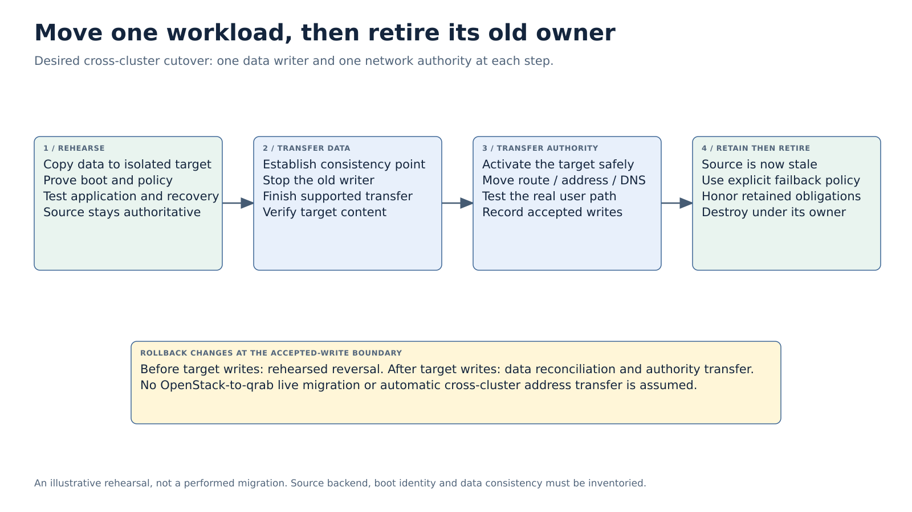
Scene 1: write the workload's contract
Call the workload Ledger. The name is illustrative; no actual VM is
identified. Its owner records the root and data disks, application consistency
method, firmware/CPU/device requirements, network addresses and policy,
identity/enrollment, management automation, acceptable downtime and rollback
point. OpenStack UUIDs and qrab UIDs belong to different identity systems.
Record both rather than treating an equal display name as continuity.
Unknowns in this investigation include the OpenStack release, image/volume
backends, firmware/TPM configuration and the application's data contract.
Resolve those from the old environment before choosing a conversion method.
The codebase cannot answer them by inference.
Scene 2: build a rehearsal without competing authority
Prepare the required target cluster primitives, image generation, disk
capacity, VM specification, management roles and guest policy. Use an isolated
test address and copied data for rehearsal. If boot requires a converted disk,
prove its format, provenance, boot mode and driver compatibility.
The current importer accepts an explicit raw/qcow2 single-file source. It
rejects qcow2 backing files and external data dependencies before conversion.
An old root disk with a backing chain needs a separately supported flattening
or export step; dropping it into the importer does not make the dependencies
disappear. A storage backend snapshot also needs a defined way to produce the
supported transfer representation. (S15, A04 in the audit.)
Rehearse the guest's application, console/power roles, NIC policy/routes,
resource growth, data recovery and any required guest-agent behavior. A
successful manager readiness probe is one observation; it is not the
application's acceptance result.
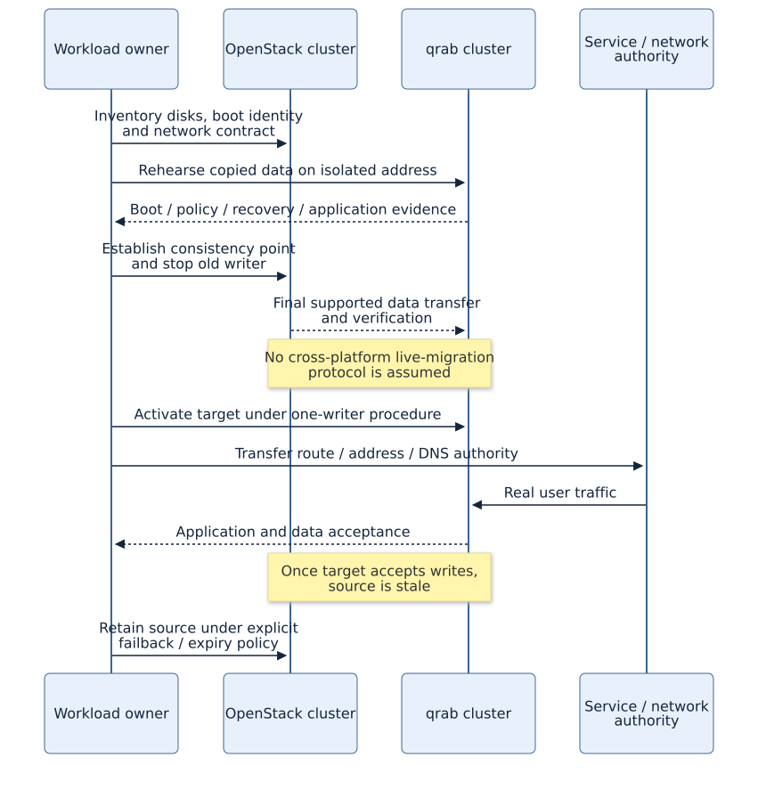
Scene 3: define the consistency point and stop the source writer
Choose the application's consistency method: for example, its own clean
shutdown or a proven coordinated backup workflow. Define which writes are
included and which acknowledged transactions the target must contain. A
filesystem freeze primitive alone is not a full multi-disk or distributed
application backup contract.
Complete the final supported transfer and verify content. Establish that the
old VM cannot continue writing to the authoritative data. Preserve its
retained recovery copy under an explicit policy. Shared storage, copied
storage and application-level replication need different proofs; no one
backend is assumed here.
Boot identity is another decision. qrab binds its retained UEFI/vTPM state to
the immutable qrab VM UID. Copying an old libvirt TPM directory into a new
state claim is not an established transfer procedure. Either provision a new
identity and re-enroll dependent consumers, or implement and verify the exact
continuity procedure required by the workload. (S05, S23.)
Scene 4: transfer network and application authority
Activate the target only through the chosen data ownership procedure. Move
the public service's route, address, DNS or upstream forwarding according to
the explicit network plan. Two clusters can each run Cilium and FRR without
sharing an address-ownership protocol. A qrab stable /32 does not transfer an
OpenStack address by itself.
Verify the actual user path, data correctness, policy and observation from
the required origins. Record the old/new VM identities, disk generations,
image/source digests, network ownership and acceptance time. Management
reachability, an endpoint Ready bit and an established BGP session are useful
parts of that evidence, rather than substitutes for an application check.
Scene 5: cross the rollback boundary deliberately
Before the target accepts authoritative writes, returning to the unchanged
source may be a simple ownership/route reversal under the rehearsed plan.
After the target accepts writes, the source is stale. Returning requires
data reconciliation or an application-specific failback that preserves the
accepted writes. Starting both copies risks two writers and two network
authorities.
State the rollback policy in the same record as the cutover. Include who may
restart the retained source, what prevents an accidental start, the maximum
retention window and the final destruction procedure. A retained snapshot
without those ownership rules is incomplete rollback documentation.
Scene 6: retire the old dependency after its consumers move
Delete the old workload only under its agreed data/identity retention policy.
Retire Nova/libvirt, Neutron/OVN, Keystone, Glance/Cinder or their databases
and message services when their last actual consumer and retained obligation
has an owner in the target. One migrated guest does not establish that every
service can leave the old cluster.
For Ledger, keep a short evidence record:
Record
Example of the information to capture
Identity
Old UUID; new immutable VM UID; intentional new or preserved guest identity
Data
Consistency point; disk mapping; transfer checks; authoritative writer; restore evidence
Network
Old/new address authority; route/DNS change; allow/deny and user-path observations
Control
Management roles; service enrollment; exact tested images and configuration
Acceptance
Application outcome, accepted-write boundary and responsible workload owner
Rollback
Last simple reversal point; later failback procedure; retained source and destruction date
This record is a desired workload acceptance artifact. Source tests in
verification support individual mechanisms; they do not
populate an unperformed cutover record.
Architecture decisions for the target
These are proposed/confirmed design contracts for presentation and further
engineering. "Current evidence" points to the implementation; it is not a
claim that a separate organizational ADR process has approved every detail.
D01 — Kubernetes is the declarative control plane
Decision: express VM and migration intent as Kubernetes resources and
reuse its API, admission, scheduling and resource lifecycle. Reason: avoid
a second general cloud state/placement/messaging plane. Consequence: the
operator must make retries, status, ownership and failure recovery precise;
VM-specific constraints remain explicit. Current evidence: S02, S03, M01.
D02 — Manager is the local QEMU owner
Decision: supervise QEMU/swtpm directly in the manager container, with
private QMP/QGA/VNC and a bounded local control API. Reason: make process
ownership align with the VM Pod and keep protocol libraries reusable.
Consequence: manager owns child cleanup, leases, timeouts and hotplug;
management sidecars enforce user policy. Current evidence: S04–S07.
D03 — Each guest NIC has its own Cilium identity
Decision: use separate restricted anchor Pods and a narrow privileged
node daemon for TAP/vhost grants. Reason: reuse the existing fabric while
separating guest packets from management. Consequence: per-NIC resource
cost, address/route reconciliation and a maintained handoff integration.
Current evidence: S08–S12.
D04 — Identity mechanisms stay distinct
Decision: use Kubernetes API auth/RBAC, OIDC user roles and SPIFFE workload
admission at their respective boundaries, without Keystone in the target.
Reason: avoid confusing the human actor with the service peer.
Consequence: exact service identity is necessary but not sufficient for
user management actions; guest identity remains separate. Current evidence:
S17–S20, S23, S24.
D05 — Storage fences determine replacement safety
Decision: require clean old-process release or hard backend fencing before
new native-disk ownership. Reason: API object disappearance is not proof
an old writer is gone. Consequence: unknown/failed ownership can block
recovery; credential generations and journals are part of the protocol.
Current evidence: S13, S14.
Decision: distinguish current access grants from lifecycle ownership and
scope GC/deletion to the created launch/resource. Reason: labels, names
and mutable grants can otherwise widen destructive authority. Consequence:
unproven legacy state stays retained; corrupt group provenance requires
correction rather than fallback. Current evidence: A01 and A02 in
the audit.
D07 — Implement the required image/volume subset deliberately
Decision: build on the existing sealed-image and native-disk foundation,
with explicit backup, publication, retention and recovery requirements.
Reason: replacing a service name is not completing its product contract.
Consequence: no broad Glance/Cinder API equivalence, generic backend or
multi-writer claim without additional design and proof. Current evidence:
S13–S15 and the capability ledger.
D08 — Migration transfers ownership, not just bytes
Decision: prepare a fenced target, authenticate the exact VM, transfer
supported state and adopt only from explicit completion evidence. Keep node
conntrack exchange and disk I/O in their own authority domains. Reason:
RAM copy alone does not preserve network/storage/identity safety.
Consequence: unsupported state refuses clearly; fork/platform contracts
must be versioned and tested. Current evidence: S08, S11, S12, S13.
D09 — Release stages and evidence classes stay separate
Decision: distinguish source, manifests, dated live observations and desired
state; separate merge, publication and rollout. Reason: prevent a code fix
or unit test from being presented as deployed proof. Consequence: every
acceptance record names its scope and versions. Current evidence: M02,
T01 and the repository maintenance instructions.
Skeptical questions for the architecture review
Is this just OpenStack in Rust?
No. The intended control model is different: Kubernetes resources and existing
platform controllers own declarative intent and placement; a manager in each
VM Pod owns QEMU; Cilium already supplies the fabric. Some VM-specific
orchestration remains necessary. If qrab recreates general placement,
messaging, networking and identity control planes beside Kubernetes, it loses
the point of this design.
Does putting libvirt in a Pod already solve this?
In the supplied deployment, the libvirt service is containerized but its VMs
still live in traditional libvirt-created host cgroups. qrab's execution
boundary places QEMU under its own manager container. This is a comparison of
that deployment model, not a universal claim about every way to run libvirt.
Can we remove Nova just because QMP works?
QMP supplies local hypervisor control. Nova also coordinates lifecycle,
placement and resources. The replacement owner is Kubernetes plus the
operator plus manager, with explicit recovery/storage/network seams.
The code map shows that split.
Does Cilium remove all the work Neutron did?
It removes the need for an OVN guest fabric in this target. Stable address
claims, guest configuration, attachment, policy, routes and handoff still have
owners. The current contract is narrower than general Neutron networking.
See the network view.
Why a Pod per guest NIC?
It gives the NIC an independent Cilium endpoint/IP/policy identity and keeps
guest packets out of the VM management namespace. Each NIC can have different
group labels. The cost is an extra Pod/endpoint per NIC, a privileged node
attachment helper and migration integration. That cost belongs in capacity
and operations planning.
Is the networking all upstream Cilium?
The ordinary packet datapath uses Cilium and kernel TAP/vhost resources.
Duplicate-address standby/active live handoff depends on the local Cilium
fork and its node API. That fork is a real maintained dependency, not an
upstream compatibility promise.
Why keep FRR if Cilium supports BGP?
The existing platform uses frr-k8s/FRR, and qrab writes scoped
FRRConfiguration resources. Replacing that integration is a separate design
choice. Advertising routes and programming the guest datapath are different
responsibilities.
Can Kubernetes auth replace every Keystone and application role?
Kubernetes auth/RBAC protects its API. OIDC identifies users to management
apps; per-VM roles authorize their actions. SPIFFE/SPIRE identifies services.
The target removes Keystone but retains these explicit policy owners and the
external identity provider. A service SVID is not a human admin role.
Is the guest disk just a Kubernetes PVC?
The firmware/vTPM state uses a small filesystem PVC. Current native guest
root/data disks use QEMU libiscsi to a ZFS/LIO backend, provisioned through
the storage service. Calling both "the VM volume" obscures fencing and
retention. See storage.
Are Glance and Cinder already replaced?
There is a constrained foundation: image imports/sealed generations, clones,
exports, growth and fencing. Completion depends on the required image sharing,
distribution, backup/restore, attachment, quotas and recovery subset. No broad
OpenStack API or multi-backend equivalence is claimed.
Does Kubernetes guarantee a single disk writer after node loss?
No such guarantee is assumed here. Missing Pods, unresponsive nodes and
expired leases are not hard disk fences. The storage guard needs clean old
process evidence or a completed backend fence before safe replacement.
Does the vTPM make this confidential computing?
The active software-vTPM path provides stable guest identity interfaces and
optional guest SPIRE enrollment. The trusted node/hypervisor/manager/storage
administrator can still affect it. The retired SVSM experiments are not the
active runtime's trust model.
Can every running VM migrate?
Migration has concrete admission limits: supported source state, compatible
machine/CPU/disks, no unsupported management policy, and suitably shared
auxiliary claims. Powered-off VMs have no running guest to live-migrate.
The current protocol is within qrab; cross-platform live migration is not
established.
Does a green test mean the cluster is safe to cut over?
Only within that test's scope. Hermetic protocol/controller tests, real-QEMU
tests, privileged kernel tests and live workload/cluster acceptance establish
different facts. A test that silently skips is not live evidence. Use the
capability ledger and transition plan.
What did this review actually fix?
It found and repaired label-only state-PVC adoption, access-list-driven group
cleanup, image metadata selecting unverified backing/data dependencies, and
host cgroup names impersonating Pod identity, and process/path lifetime gaps
in privileged resource selection.
The audit records regression evidence and merged SHAs.
Source merges do not mean the fixes are already in deployed images.
Is it cheaper, faster or more reliable?
Those are testable goals, not conclusions of this source review. A simpler
control-plane ownership model can reduce duplicated operational work, but
fair measurements must include the Cilium fork, node helpers, storage service,
identity dependencies and the workload's actual recovery requirements.
A guided walk through one VM
Imagine a VM named web. You want it to boot a known image, hold its data,
have one guest network interface and be manageable from a browser.
You create a VirtualMachine resource. Kubernetes checks who you are and
whether the request is allowed. The qrab operator reads the current object
and works out what must exist. The name web is the human handle; the VM's
immutable UID is the identity the runtime and its owned resources bind to.
If you asked for a disk, the operator uses the storage service to provision
it. A root storage helper manages the actual ZFS/LIO objects. QEMU will later
open the disk directly over iSCSI; your disk bytes do not take a detour
through the operator. The small filesystem volume holding firmware variables
and the virtual TPM is a different volume from the guest's root disk.
Kubernetes places the VM Pod on a node. Inside it, a Rust manager starts and
supervises QEMU and swtpm. QEMU is a child in the manager container's lifecycle
and resource boundary. There is no libvirt domain managing this VM outside
its Pod cgroup. QEMU and KVM still do the virtualization work; qrab did not
replace them with another hypervisor.
The manager creates private QMP, VNC and guest-agent sockets. You do not
connect to them from the internet. Redfish translates authenticated management
requests into bounded manager operations; BMC handles the graphical console.
The manager is the one process that owns production QMP control.
Your guest NIC gets another Pod: its anchor. That Pod has the address and
Cilium identity for the NIC. A privileged node helper creates its TAP and
vhost resources and gives QEMU the descriptors it needs. Packets move through
kernel queues into the anchor's namespace and Cilium. The guest does not
share the management Pod's network identity or its loopback listeners.
Security groups become anchor labels selected by real Cilium policies. A
label alone does not create a firewall. The platform must install the
intended baseline and allows. FRR still distributes routes using BGP; the
operator writes the small slice of routing intent belonging to the NIC.
When you open the dashboard, the existing OIDC provider identifies you.
The dashboard keeps your token on the server and checks whether you can see
or manage web. It calls the selected VM's service over workload mTLS and
forwards your user token. The service checks both its calling workload and
your role. Kubernetes API auth, a human login and a service certificate are
three different decisions.
If you power web off through Redfish, QEMU stops but manager stays reachable
to turn it back on. If you set spec.running: false, the operator removes
the VM Pod. If the node disappears, the operator cannot assume the old disk
writer is gone; safe recovery requires clean ownership evidence or a hard
storage fence.
If you live-migrate web within qrab, a target manager prepares empty state,
authenticates the same VM source and receives its memory/device/identity
state. Shared disks stay in storage. NIC ownership switches to a fenced
target anchor, with separate route and conntrack work. This is not an
OpenStack-to-qrab migration mechanism.
If you delete web, several owners clean up their pieces. Proven owned
control resources and a same-launch dashboard state claim can be collected.
Manual/unproven identity claims are retained. Guest exports are fenced;
retirement and a separately authorized host reaper govern eventual guest-disk
destruction. Access groups and guest registrations have their own cleanup.
"Delete" therefore has a specific meaning for each object.
That is the OpenStack comparison: Kubernetes owns the intent Nova previously
coordinated, manager replaces local libvirt supervision, Cilium replaces the
OVN guest fabric, and existing auth/identity systems replace Keystone's role
in the target. Image and volume responsibilities still need a complete
required subset, even though much of their foundation already exists.
Kernel mechanisms connecting guest virtio queues to the anchor datapath
SCM_RIGHTS
Unix descriptor transfer; carries authority to use an FD, not its packet payload
Cilium endpoint
Policy/datapath identity for the relevant Pod/anchor
Security group
NIC label selected by platform Cilium policy; the label alone is not enforcement
FRRConfiguration
Kubernetes route intent consumed by frr-k8s/FRR
BGP
Route advertisement protocol; not a packet tunnel or encryption mechanism
State PVC
Filesystem claim for UEFI/vTPM identity, distinct from guest root/data LUNs
Native guest disk
QEMU libiscsi backend to an authorized LIO export
CHAP
iSCSI login authentication; separate from encryption and hard fencing
Fence
Backend action that prevents/drains the old export/session before safe new ownership
Retain / retire / destroy
Preserve bytes; remove from active service with lifecycle metadata; irreversibly erase bytes—different operations/owners
BaseImage generation
Immutable verified/sealed clone source exposed by the image catalog
Launch ID
Public random provenance tying a dashboard launch to its created resources; not a credential
OwnerReference
Kubernetes lifecycle/GC relationship; not independently proof of storage fencing
Finalizer
Cleanup coordination before object removal; stripping it bypasses normal cleanup
OIDC subject / ID token
Human identity claims verified for the configured issuer/audience/lifetime
ServiceAccount
Kubernetes workload API principal; the dashboard's backend authority is separate from its browser user's identity
SPIFFE SVID
Workload identity certificate/credential used for exact peer admission
SPIRE
Workload identity issuance/attestation infrastructure; not a human login directory
Guest identity
Optional in-guest SPIRE/vTPM principal, separate from manager/Pod identity
vTPM
Software TPM state/interface; does not isolate secrets from trusted hypervisor/node administrators
Workload mTLS
Mutual TLS between admitted service peers; separate user-action authorization still applies
Handoff
Explicit standby/active endpoint ownership transfer during migration; uses a local Cilium fork
Reconciliation
Repeated convergence from current intent/observations, including partial progress and retries
Source evidence
Behavior present in inspected code/tests
Manifest intent
Behavior requested by checked-in resources; not proof those resources are applied
Dated live evidence
A bounded observation/test of named deployed versions at a stated time
Desired state
Proposed/required architecture; not automatically an implemented capability
For OpenStack service names and their replacement owners, use the
replacement map. For ports and stream IDs, use the
connection atlas.
Presentation variants
The same evidence supports different stories. Keep the simple matched
OpenStack/qrab boundary pair at the center, and use detailed diagrams only
when their particular seam answers the audience's question. Raw diagrams,
captions and light/dark/print variants are in the catalog.
The decks have speaker notes. HTML supports arrow keys, notes (N) and
fullscreen. Native boundary figures in PPTX are editable shapes; Mermaid
figures retain their separate editable source/SVG and use PNG in PowerPoint.
Use the offline reader, handbook PDF,
diagram portfolio, or complete shareable bundle.
The bundle's reader/assets work offline; source-code and deeper subsystem
links still require the repository checkout. Build instructions
explain regeneration and verification.
Five-minute leadership story
Opening: We already run Kubernetes, Cilium and BGP. Today they host another
cloud control plane. The proposed change is to make those existing systems
own the VM lifecycle and network fabric directly, with a small VM-specific
operator and a manager beside QEMU.
Show the OpenStack overview. The services are in containers, but libvirt
still owns the QEMU domains in host cgroups. OVN supplies a separate guest
fabric while Cilium supplies Kubernetes networking. We are comparing that
specific deployment with a different qrab cluster.
Show the matching qrab overview. The VM is a Kubernetes object. The
operator reconciles it; the manager supervises QEMU in its container. Each
NIC has its own Cilium identity, separate from management. Kubernetes,
Cilium, FRR/BGP, QEMU/KVM and the underlying infrastructure remain.
Explain the replacements. Nova/libvirt move to Kubernetes, operator and
manager. Neutron/OVN move to Cilium, anchors, netd and scoped routing intent.
Keystone leaves the target, while existing OIDC, Kubernetes authorization and
SPIRE provide their distinct identity functions. Image and volume work is
already underway: verified imports, sealed images, clones, growth and fencing
exist. Finish the required image/volume recovery and product subset.
Close on the decision: accept the ownership model, prove the required
workload contract, then retire services when their last responsibility has
moved. This is a source-grounded design, not a measured cost/performance claim
or an assertion of full OpenStack compatibility.
Containerizing a service does not define where its VM processes live
Matched overview pair, cgroup comparison
2. Control/data split
Kubernetes intent, bounded local commands, guest packets and disk I/O have different paths
Control/data map, code map
3. Local VM lifecycle
One QMP owner; child cleanup and state leases survive failure/cancellation
Process containment, power state
4. Network identity
Per-NIC anchor separates guest and management policy
Two-networks map, packet path
5. Migration
Fenced target and explicit ownership transfer; local Cilium fork is a dependency
Migration streams/state/sequence
6. Identity
Human grants, service admission and guest identity remain separate
Identity questions, management request
7. Image/disk subset
Existing implementation is useful; fencing/recovery determine safe replacement
Storage control/data, image import, disk lifecycle
8. Evidence and bugs
Concrete boundary defects were reproduced and repaired
Audit, rejected hypotheses and scoped verification evidence
9. Remaining decisions
Workload-specific feature and operational acceptance
Capability ledger, transition plan
For discussion, ask which invariant must remain true if a controller crashes
between any two calls. That question exposes the useful comparison with the
old ownership model more effectively than counting service binaries.
Twenty-minute operations workshop
Use a failure-first sequence: the guest is off but management is up; a NIC
cannot reach the world; the storage API is down but guest I/O continues; a
node disappears; a migration has two visible Pods; a deletion waits on one
finalizer; a user can log in but cannot power a VM. In each case, identify the
authoritative owner, the evidence to collect and the unsafe inference to
avoid. The operations matrix supplies the answers.
Then compare the old and target responsibilities: fewer duplicated control
planes should make those ownership questions easier to answer, but the
target still requires disciplined storage, networking, identity and release
operations. Use the current-state maps to assign on-call ownership and the
capability ledger to decide which drills must pass for a workload.
Suggested visuals: power state, failure domains, storage control/data,
migration streams, deletion ownership and release boundaries.
One-page handout
Use the executive brief and the matched overview pair. Keep
the replacement table and three statements: QEMU/KVM remain; one Cilium fabric
does not mean one shared guest/management identity; image/volume recovery work
has explicit remaining scope. Put the source baseline/evidence date in the
footer. Link the atlas rather than shrinking a detailed sequence onto a
single unreadable page.
Whiteboard variant
Draw three boxes: Kubernetes intent, a VM Pod, and a NIC anchor. Put manager
and QEMU inside the VM Pod; put TAP/routing/Cilium identity in the anchor.
Draw a control line from API/operator to Pod configuration, a local manager
control line to QEMU, and a guest packet line to the anchor. Add storage
outside the Pod, with separate provisioning and I/O arrows. Finally add OIDC
for the human and SPIFFE for the service peers. This exposes every major
boundary without requiring the audience to learn the crate names first.
Editing and exporting
The editable document sources live in this directory. Diagram JSON sources
describe deliberately positioned slide-sized vector layouts; Mermaid sources
describe technical flows/states/sequences. Rendered SVGs are portable text/vector
assets, and PNGs provide presentation-tool compatibility. The document build
tools under contrib/docs record and validate their input/output provenance.
Generated reading/presentation exports are documentation artifacts; no website
hosting, service deployment or external message is part of this task.
Focused subsystem variants
The networking, storage and identity decks are additional audience-specific
narratives. Networking starts from the two fabrics in the supplied OpenStack
cluster, then follows guest endpoint identity, descriptor control and handoff.
Storage starts from surviving Glance/Cinder responsibilities, separates
provisioning from I/O, and finishes with import integrity, fences and recovery.
Identity separates human login, application roles, workload admission and
guest/storage authority. Each has its own notes and evidence references.
Use the operating model to explain why a crate graph, a
Pod diagram and a responsibility map differ. Use verification
for a skeptical review of what the collected tests actually establish.
The latest explicit networking verification includes the previously skipped
WireGuard cases; verification distinguishes that local
provider fixture from production VPN and Cilium/BGP acceptance.
OpenStack operator and cutover workshop
The operator deck starts from daily tasks, then follows one workload between
the two clusters. It separates guest Off from declarative Pod removal,
container resize from guest onlining, disk recovery from rescheduling, and
data cutover from network authority. It finishes with rollback after accepted
writes, the desired recovery bundle and the different credential/deletion
lifetimes. This is a practical handover story for an OpenStack operator.
Use the task translator as the desk reference,
the cutover storyboard as the rehearsal narrative and
continuity for the recovery discussion. Cross-platform
live migration and a complete backup/restore product remain unestablished.
Upstream OpenStack diagrams as a comparison reference
These unmodified images are from the OpenStack contributors' Neutron 2026.1
OVN reference architecture,
retrieved 2026-11-17. The documentation page declares
Creative Commons Attribution 3.0
except where otherwise noted. Original image files are preserved unchanged;
their source URLs and hashes are recorded in
provenance.json.
They illustrate the generic upstream reference architecture, not the
operator's Kubernetes-hosted OpenStack cluster. Do not infer its node counts,
physical interface arrangement, floating-IP mode or exact service placement
from these figures. The matched qrab/OpenStack overview pair
uses the supplied deployment context instead.
Upstream service layout
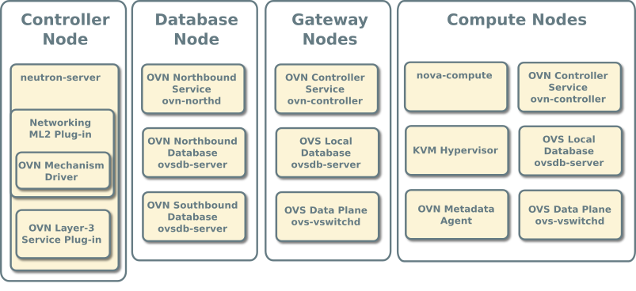
Read this for the control/database/controller/datapath ownership split. Then
use the replacement map to assign each required duty
to the target: the OVN-specific control/datapath pieces leave the qrab guest
path; Kubernetes, QEMU/KVM, Cilium, FRR/BGP and backing infrastructure retain
their respective work.
Upstream OVN networking architecture
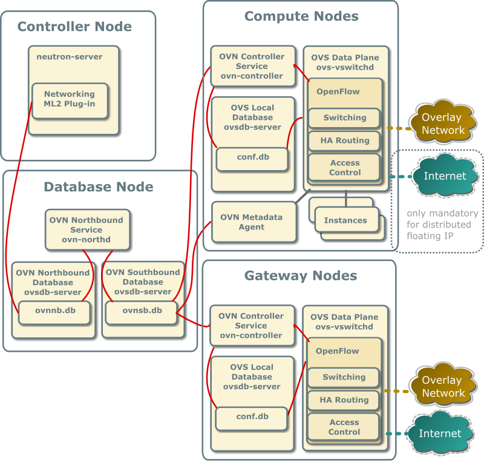
This figure is useful context for the separate OVN guest fabric. qrab's
corresponding path is a guest virtio interface, kernel TAP/vhost in a separate
NIC anchor namespace, Cilium endpoint policy/datapath and retained routing
infrastructure. The network responsibilities survive even though Neutron/OVN
are removed from the target.
Presentation use
Keep the attribution and source link with any reused upstream image. Preserve
the distinction between "upstream reference" and "our deployment." For the
five-minute talk, use the simpler matched overview pair; use these originals
as the technical appendix when discussing the ownership being replaced.
Architecture boundary audit
This register contains source-backed findings and verified repairs from the
architecture investigation begun on 2026-11-17. Work claims, detailed progress
and operational notes live in the qrab project in towl. It is not a claim
that every possible violation has been found or every deployed image contains
these repairs.
A01 — state-PVC adoption crossed the launch ownership boundary
Affected source:resources::state_claim_adoption in the operator and
launch::render_pvc in the dashboard. Baseline:5f361b7.
The operator previously granted a VM controller ownership of a state claim
when the claim carried app.kubernetes.io/managed-by: qrab-dashboard and had
no existing controller. It did not verify the intended VM or launch. A VM
referencing another dashboard-created claim could therefore acquire
garbage-collection authority over that identity volume. The manager's later
VM-identity check did not undo this earlier ownership mutation. A name reused
after an earlier launch was another ambiguity.
The repair requires both resources to carry the dashboard label and the same
valid random launch ID; the claim must also match the VM annotation,
namespace and referenced state-claim name. Deleting resources and claims
with an existing controller are not adopted. The patch retains exact
UID/resourceVersion preconditions and preserves other non-controller owners.
New dashboard PVCs record the launch provenance. Legacy/reused claims without
the proof remain retained; established controller ownership is unchanged.
The regression reproduced the foreign-VM adoption failure before the change.
It passes after the change, covering foreign/stale/missing provenance,
namespace/name mismatch, invalid IDs, deletion and existing controllers. A
dashboard test also checks the actual rendered VM/PVC contract against the
operator adoption function. The full contrib/check-runtime.sh passed:
formatting, workspace tests, generated CRD/policy comparisons and strict
Clippy. These checks are hermetic; no live cluster deletion was exercised.
Merged source:719335966b72ba33332f53ad8d9a36812771c965.
Tracking: qrab work/state-pvc-adoption-launch-boundary.
The primary main checkout was synchronized. This audit performed source work
and tests; image publication and deployment have separate evidence.
The provenance annotations are public trusted Kubernetes metadata, not secrets
or cryptographic credentials. An actor with broad authority to forge or
rewrite those objects remains inside the namespace administration trust
boundary. This fix scopes normal cleanup; it does not turn a namespace with
unrestricted Pod/resource writers into a hostile multi-tenant environment.
Documentation boundary reconciled with the agreed deletion design
Some older operator comments/guides said state PVCs were never collected,
while the implemented dashboard deletion path already adopted dashboard
claims. The user-approved deletion design recorded in qrab towl
container/vm-deletion-cleanup permits collection of the dashboard launch's
own claim and retains manual claims. The repair updates the operator API
description, generated CRD, crate instructions and subsystem documentation to
state this narrow exception and its provenance checks.
PVC deletion is not backing-data destruction. The documented Retain-only
storage contract leaves a Released PV/zvol for a separately owned cleanup
workflow. Guest disk exports, retained identity state and group cleanup are
different ownership domains and must stay distinct in presentations.
A02 — access grants incorrectly determined group cleanup authority
Affected source: dashboard cleanup::reconcile_vm and cleanup::owned.
Repair baseline:0301347 (the source advanced independently during the
investigation).
The finalizer scanned current console admin/viewer grants instead of the
group UUIDs recorded at launch. Removing an original group from those grants
left it behind at deletion. A generated group from a previous launch of the
same namespace/VM name also passed the old name/description ownership check.
Access membership had incorrectly become lifecycle ownership.
Cleanup now uses the recorded launch ID and admin/viewer UUIDs, validates the
references before deletion and checks the exact launch-derived group name,
returned UUID and namespace/VM/role description. Current console lists do not
widen or erase that authority. Pre-launch-ID VMs look up only their exact
legacy names; incomplete modern provenance does not fall back to legacy.
Missing groups are already cleaned; invalid/mismatched provenance and service
outages keep the finalizer for a safe retry or explicit correction.
The amended regression failed before the repair because the original groups
were leaked. It passes after the repair and preserves platform, other-VM and
previous same-name-launch groups. Further coverage checks corrupt/missing
metadata, foreign UUIDs, legacy cleanup and outage behavior. Full dashboard
tests and contrib/check-runtime.sh passed. No live Kanidm groups were deleted
by these hermetic checks.
Merged source:8a30586610cc80073076859454ce2554215fb2bd.
Tracking: qrab work/access-group-cleanup-launch-boundary.
Primary main was synchronized. The audit performed no runtime release or
cluster rollout.
As with A01, the annotations are public trusted metadata. Broad namespace/API
administrators remain trusted. The repair does not claim an immutable or
cryptographic attestation of arbitrary client-supplied annotations.
A03 — network security guide retained a plaintext-era description
The detailed networking security section still called the node conntrack
exchange plain TCP, despite the implemented exact-node SPIFFE TLS path and
the newer connection-atlas/enrollment evidence. The atlas work corrects that
paragraph to match peer_tls and the existing rollout record. On-link address
checks remain additional authorization, not a substitute for peer identity.
This is a documentation repair, not a new transport implementation or rollout.
A04 — verified image metadata could select extra unverified inputs
Affected source: operator image_job::virtual_size and the inspect/write
Job path. Repair baseline:8a30586.
The importer checked the downloaded file's digest, then allowed qemu-img to
convert qcow2 metadata that could name backing or external-data files. Those
extra local/network inputs are not covered by the top-level digest and may
cross the Job's filesystem/credential boundary. A harmless temporary marker
fixture demonstrated the conversion mechanism; no real credential or live
storage was read.
Both Job modes now run a bounded qcow2 dependency preflight before any
qemu-img invocation. It reads the fixed v2/v3 header, rejects backing
offset/length and the external-data feature, and fails on truncated or
unsupported fixed headers. Raw remains an opaque single file. This is not a
new general qcow2 parser: QEMU still performs full format validation.
Default tests require no QEMU and cover dependencies, truncated/malformed
headers, bounded reads and actual entrypoint refusal before tool launch. An
explicit fixture test passed on QEMU 11.1.3, built locally from the pinned
vendor/qemu source with downloads disabled. It checks standalone v2/v3 and
extended-L2 inputs, rejects both dependency classes, and demonstrates the
unguarded baseline reading the separate benign marker. The full runtime
check also passed. This did not test live storage, libiscsi or a guest boot.
Merged source:69ef4274d6ba973bb696371c97fb0716a1e4206c.
Tracking: qrab work/image-import-self-contained-qcow2.
Primary main was synchronized. The audit performed no production image
build/publication or cluster rollout.
The legacy staging script accepts only a reviewed hardcoded CirrOS URL/digest,
not arbitrary BaseImage sources. The general inspect/write Job interface is
the repaired boundary. Prepared backing chains must be flattened in their
trusted preparation environment before import.
A05 — host cgroup names could impersonate Pod identity
Affected source: netd cgroup::pod_uid and its use by socket-caller and
anchor-process lookup. Repair baseline:93b9792.
The old helper searched every cgroup path component for a pod<UUID>
substring. An unprivileged host user can create a transient user scope whose
name contains that text. A harmless local systemd-run --user --scope
fixture produced exactly such a kernel-reported path, and the old parser
returned its fake Pod UID. netd's caller mapping and anchor process selection
used that result as authority. A kernel-reported string still needs its
hierarchy and component semantics validated.
The repair accepts one host-view unified-cgroup-v2 0:: record and exact Pod
components under kubelet's standard /kubepods.slice or /kubepods roots,
including their valid QoS paths. It rejects user/delegated roots, partial
names, extra records and unrooted views. The same corrected mapping protects
anchor PID selection, so a lower-numbered host lookalike cannot be chosen
instead of the real Pod process. Custom roots and cgroup-v1/multi-record
views fail closed; the node daemon requires the documented host unified view.
The regression failed before the fix and passes after it. Coverage includes
both drivers/all QoS classes, nested lookalikes, malformed/multiple records
and fake-proc caller/anchor selection. The netd suite, client-only
--no-default-features check and full runtime check passed. A bounded
read-only inspection confirmed the deployed netd's standard host-rooted
systemd view. No live VM descriptor grant, NIC control or namespace/network
mutation was attempted; unprivileged kernel-netns tests are not claimed as
live datapath proof.
Merged source:4625eefabb3743b3ec775b4f547a6b873cd162bf.
Tracking: qrab work/netd-cgroup-hierarchy-authentication.
Primary main was synchronized. This audit did not publish a runtime image or
roll out the repair; later release workflows require their own evidence.
A06 — process identity checks could be separated from resource use
The old paths read a numeric PID's cgroup and later reopened /proc/<pid>
resources. A PID/path replacement between those steps could substitute another
process, namespace or mounted file. A socket's saved numeric peer PID also
does not pin the original connector's lifetime. This was a source-identified
race; no live exploit or VM grant was attempted.
The repair captures the original Unix peer with SO_PEERPIDFD, checks its
readiness/liveness during admission, and rechecks membership after the bounded
request read. Process-directory descriptors are opened before validation;
subsequent namespace, resolver and bounded VPN reads use openat relative to
that held directory. Namespace workers, queue grants and DHCP receive opened
namespace files. Numeric PID/path authorization helpers were removed.
Default tests replace/rename private fake-proc directories and demonstrate the
old path resolving replacement data while held directory/namespace handles
retain the original resource. Bounds, relative paths, symbolic PID directories
and close-on-exec behavior are covered. An explicit supported-kernel fixture
with a private child/Unix socket ran successfully and refuses the original
peer after exit even when a claimed numeric path is replaced. The netd suite,
client-only feature check and full runtime check passed. Kernel-netns tests
that self-skip under an unprivileged user are not live datapath evidence.
The server now probes SO_PEERPIDFD support at startup (Linux 6.5+) and fails
closed without it. The client-only build has no new kernel/API dependency.
Current native node metadata reports 7.0 kernels; the peer fixture ran locally
on 6.18.50. This does not claim feature/rollout acceptance on the nodes.
Merged source:095edadb84e4a383ab1ef55a09839d873e403227.
Tracking: qrab work/netd-stable-process-authority.
Primary main was synchronized; this audit did not build/publish runtime
images or roll out a cluster. The authority perspective generalizes the review.
A07 — a Pod UID did not identify a replacement NIC sandbox
Affected source: netd's plumbed/DHCP caches, grant/probe token and manager
NIC binding. Repair baseline:c10ca28.
A Kubernetes Pod can keep its UID while CRI recreates its network namespace.
The old cache and attachment token named only the UID. QEMU queues and the
DHCP socket could retain the old namespace even after the helper prepared a
new one; manager's token comparison would see no change.
A plumbed context now holds the validated process and opened namespace. Its
opaque token combines the Pod UID with that namespace's device/inode identity.
Healthy checks verify the held process still occupies the same namespace;
stale contexts invalidate readiness and stop their DHCP workers. Grants and
probes use the same current context. An agent restart observing the same
namespace produces the same token. Failed DHCP workers can be retried rather
than remaining cached as live.
Default file/context tests cover same-UID replacement, token stability,
process reassignment/exit and worker lifetime. The actual manager reconciliation
fixture demonstrates namespace-only token changes causing device removal,
guest-release confirmation, backend removal and fresh queue attachment, with
the same configured MAC and root port. Full runtime, node suite and client-only
checks passed.
An explicit isolated user/network-namespace run exercised four kernel fixtures:
namespace replacement/descriptor lifetime, TAP queue transfer, forwarding
routes and DHCP. The old namespace remained accessible through its file after
the namespace-holding task exited; the replacement did not contain its link.
Two VPN fixtures explicitly skipped without WireGuard tools. Dummy uplinks
are not a Cilium/BGP or real-guest hot-unplug proof.
Merged source:69d96eea790363d333d116c0da0a4d17ce489ecb.
Tracking: qrab work/nic-anchor-namespace-incarnation.
The audit changed source and performed isolated local tests; cluster sandbox
replacement and release operations require their own evidence.
A08 — stream framing could reject valid replies and leak installed FDs
Affected source: netd wire reply send/receive and connection setup.
Repair baseline:69d96ee plus an independent image-pin-only update.
Grant decoding assumed one recvmsg contained all JSON, and probe/handoff
control assumed one read contained the reply. Unix streams permit fragmentation.
The older conntrack-count helper read to EOF, but its per-read timeout did not
bound a peer that kept dribbling bytes. A second reproduced failure was more
subtle: on MSG_CTRUNC, nix 0.29 refused to expose the installed subset of
SCM_RIGHTS descriptors, so the error path leaked them.
New senders terminate a bounded JSON line and finish short writes without
sending rights twice. The shared reader accumulates fragments within total
time/byte/descriptor bounds. It owns every delivered descriptor before refusing
ancillary truncation or parsing JSON, checks queue/count consistency, and closes
rights on every failure. Complete legacy JSON replies remain accepted at EOF.
A full Unix listen queue is a prompt retryable error rather than an indefinite
connect before read timeouts apply.
Both principal regressions failed before the change and pass after it. An EOF
sentinel verifies descriptor closure without racing process-wide FD counts.
Fifteen wire tests cover early/late rights, fragmented probe/control/counts,
malformed/oversized/refused replies, legacy EOF, deadline dribble, unexpected
rights and full listen queues. They pass in both node and client-only builds.
The full runtime and netd suites pass. An explicit isolated TAP fixture passed
real descriptor transfer and packet injection with the new decoder.
Merged source:9e1dd3f0c8c605923efc575940082f839cad8297.
Tracking: qrab work/netd-reply-stream-framing.
These checks exercise the local protocol and kernel mechanism; they do not
establish a deployed endpoint handoff or cross-node traffic outcome.
A09 — delayed status could be published onto a same-name replacement
Affected source: netd readiness and VPN-port condition writers.
Repair baseline:9e1dd3f.
Local work held a Pod snapshot while plumbing or renewing a mapping, then
patched status by name without UID/version conditions. A replacement Pod could
receive the old result. Two fake-API regressions reproduced this through the
actual readiness and port-report entrypoints.
Both writers now use a shared conditional strategic patch with the observed
Pod UID and resourceVersion. Missing references fail closed; a rejected patch
is not cached as success. Successful kernel context retains its summary so
fresh reconciliation retries a conflicted status write from current watch data
without repeating plumbing or waiting for the sixty-second reverify interval.
Four focused tests cover replacement identity, version conflict/retry, missing
provenance and preservation of unrelated condition types. A no-op native API
server status dry-run accepted the matching snapshot, rejected a wrong UID
alone as immutable and rejected a stale version as Conflict. The dry-run
persisted no resource change and did not restart a Pod or VM.
The full runtime check passed with RUST_TEST_THREADS=4; strict node checks
also passed. These API conditions establish observation ownership, not backend
fencing or live guest health. Kubernetes documents
conditional PATCH and conflict retry.
A healthy namespace-bound responder retained its original copied lease even
when later plumbing applied a different VPN address/DNS/MTU. Separately,
serve_dhcp reported thread creation as success before namespace entry or UDP
binding ran. A setup failure could therefore coexist with reported readiness.
The responder now binds its socket in the verified namespace before returning
success. That socket carries the namespace for subsequent I/O. Each request
reads one complete shared lease snapshot; reapplying a plan updates a healthy
same-namespace responder without rebinding port 67. A process-reference refresh
invalidates grants while preserving a potentially reusable namespace socket.
A changed namespace or removed Pod retires it. Failed responders invalidate
fresh readiness and retry; the socket closes before exit is published.
The invalid-namespace startup regression failed before the change and passes
after. An isolated real-link fixture received both the original and updated
address, DNS, MTU and lease duration from the same worker. A second bind failed
synchronously with AddrInUse while the first server continued to answer.
Default worker/readiness tests, client-only compilation and the full runtime
gate passed; the explicit isolated kernel suite exercised four paths while
two optional VPN fixtures skipped for missing tools.
This updates later DHCP answers; it does not force a guest to renew or rewrite
static NoCloud configuration. No live profile, Pod or route was changed.
Discovery selected the first process beneath a Pod UID. That did not distinguish
an older live container/sandbox from the running anchor container identified
by the current Pod snapshot. Mounted-config discovery could likewise select a
convenient older same-UID mount. The private regression selected reference 7
when the API fixture identified reference 9 as current.
Selection now joins the declared regular anchor container's observed Running
status and complete runtime ID to the direct container cgroup scope beneath
the trusted Pod component. Pod UID/container ID come from one bounded cgroup
read. Held process/namespace references are rechecked against that Pod snapshot;
VPN files are read through the selected process instead of rescanning by UID.
Operator and node service share the unchanged container-name constant.
A current Running container is required even when it is not Ready. Missing,
terminated, unknown or ambiguous identity waits for a usable observation.
This can wait through image pull; it has no readiness cycle because the anchor
executable only waits for termination. Same-namespace process restart preserves
the attachment token and DHCP socket. Supported conventional cgroups use full
64-hex containerd/CRI-O/Docker-style IDs; unsupported layouts fail closed.
Default tests cover current selection, stale cache, missing/terminated status,
direct scope identity and selected mount reads. The explicit kernel fixture
keeps two real namespace holders alive while private fake-proc/API entries
select the newer one; it also proves old namespace-file lifetime after task
exit. A separate native read-only sample matched containerd's API ID to its
host cgroup. Neither is a live CRI recreation/rollout. Full runtime and
client-only checks passed; two optional kernel VPN fixtures still skipped.
Reconcile read a digest before plumbing independently reread/parsing the file,
then recorded the earlier digest. An A→B→A rewrite could leave B applied while
the stored A fingerprint falsely matched the restored desired file. Renewal
also reread desired gateway data rather than using the installed plan, and a
late round could repopulate the UID-only cache after a namespace/config reset.
One bounded read through the selected process now supplies both parsed tunnel
and fingerprint. The successful ready context retains only its digest/gateway,
not another private-key copy. Renewal uses that applied context. Its generation
combines the held namespace token with the applied digest; cache insertion is
conditional on the still-current generation. Reverify of unchanged state
preserves the round. Old completions are discarded, a failed report cannot
clear another generation, and disabling forwarding reports unmapped even after
cache reset. The redundant separate digest map was removed.
The late-namespace round regression failed before the change and passes after.
Controlled file snapshots cover the A→B→A case; private API/cache fixtures cover
unchanged reverify, changed config, stale completion and disabled forwarding.
Default node tests, client-only compilation and the combined full runtime gate
passed. All six explicit kernel fixtures also executed with temporary
WireGuard tooling, strengthening the separate mechanism evidence.
The digest identifies configuration bytes; it is not a credential or proof of
remote provider state. API status remains a conditional observation, not a
transaction spanning kernel commands, provider replies and Kubernetes.
A13 — a reusable endpoint name could retarget a handoff effect
Affected source: netd control handler and local Cilium handoff API client.
Repair baseline:dd2f604.
Authorization selected an own-VM/NIC Pod snapshot, but the privileged PATCH
resolved a reusable CEP name without checking the endpoint returned by Cilium.
The private control-entrypoint regression accepted a same-name foreign VM
endpoint and recorded its mutation.
The client now looks up the name, verifies exact singleton VM/NIC, component,
application and namespace identity labels, requires the unique CNI attachment
identifier, and sends the mutation to that immutable alias. Numeric endpoint
IDs and deprecated container IDs are not fallback authority. Missing or
ambiguous ownership/attachment evidence fails closed.
The foreign-endpoint regression fails before and passes after. A separate
fixture rebinds the name to B after a valid lookup and proves only verified
attachment A is selected. Negative fixtures keep the API available and record
that no PATCH occurs. Local HTTP tests cover content-length/close framing,
truncation, header/body bounds, ambiguous framing, errors and total deadlines.
The full runtime/client gate and final strict Clippy pass.
A read-only native endpoint sample exposed all five required labels and the
unique field, matching the current fork's API model. This is prerequisite/schema
evidence, not a live handoff. The current fork must preserve these labels and
unique-ID support. No live endpoint, image, fork source or rollout was changed.
A14 — process names selected the privileged conntrack tool environment
Affected source: netd Cilium-provider discovery and bpftool wrappers.
Repair baseline:3b2ea31.
The privileged wrapper scanned /proc/*/comm for cilium-agent, then entered
that PID's mount/PID namespaces and ran bpftool. A process name is writable
and does not authenticate a platform service. The private baseline selected a
comm-only reference with no trusted-provider evidence; later numeric namespace
lookup also separated selection from use.
The provider is now the original kernel peer of the administrator-configured,
protected Cilium API socket. netd captures its pidfd, proc directory and opened
mount/PID namespace plus root-directory handles. nsenter receives inherited
handle paths, an explicit held root/working directory and a fixed trusted PATH.
It performs no later -t PID lookup. One provider snapshot serves an export;
conntrack scope/filter/rebase and streaming-memory contracts remain separate.
The default rejection test fails before the repair and passes after. Explicit
private peer/path-replacement and namespace execution fixtures ran. The latter
launches a helper in distinct mount and PID namespaces and verifies the test
child's reported namespace IDs match that provider, even after fake-proc path
replacement. It executes only readlink/test commands, not live BPF operations.
Full runtime/client checks and final strict Clippy passed.
A read-only native observation found the Cilium directory root-owned mode755
and its socket root-owned mode660. That protected configured path remains a
platform trust prerequisite. No live-node exploit, BPF map, image or rollout
was performed by this audit.
The name <vm>-disk-<disk> is not an ownership proof. Valid pairs a /
b-disk-c and a-disk-b / c produce the same name. A normal removed-disk
cleanup can delete its old Secret and then fail to record its status. If the
other VM creates its own credential before the retry, the old name-only
DELETE can remove that other VM's Secret. Generic operator admission checks
the old object's internal ownership shape, rather than the intended VM UID
of this particular reconciliation.
A private API test using the actual Secret renderer and credential store
failed before the fix with foreign credential deleted. No live credential
was changed. The repair sends only JSON Patch test operations for the
expected VM owner, role labels and disk annotation, requesting a
PartialObjectMetadata response with no full-object fallback. It validates
the returned single controller owner and object identity, then deletes with
both Secret UID and resourceVersion preconditions.
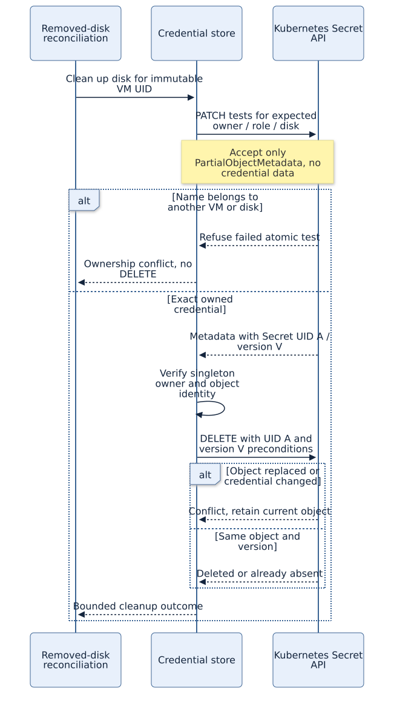
The operator retains no Secret GET/list/watch permission and reads no
credential data for this check. A foreign/malformed owner is refused; an
object replacement or credential update between check and deletion conflicts;
a missing object is idempotent. The implementation preserves the established
Secret naming and admission contract rather than broadening API access.
Six private API cases exercise the actual store, including the two-step
release/retry collision, changed UID/version, metadata-only negotiation and
missing/ambiguous identity. The complete runtime gate and strict Clippy pass.
These tests establish local client behavior, not a production rollout or a
storage fence: deleting a Secret still does not close an existing disk session.
Validation repair: the HTTP power fixture depended on test order
A full gate exposed a deterministic isolated-test failure: the operator's
plain-HTTP power fixture built a default reqwest backend under
rustls-no-provider without initializing a provider. Another test's global
initialization could hide it. The fixture now initializes Ring explicitly and
reuses its client; production continues to supply its SPIFFE TLS configuration.
The isolated test and strict Clippy pass, followed by the combined full gate.
Merged test repair:265afecf4327985086ae8c676f7ca0b2c7eb757c.
Tracking: qrab work/operator-power-http-provider-initialization.
This is test isolation, not another production authorization defect.
The final combined gate used four test threads on the busy host. Timing
variance, isolated reruns and complete check logs are recorded in towl.
Validation repair: trace capture needed an isolated registry
The dashboard privacy case intermittently missed its positive VM launch
marker under parallel tracing callsite-cache changes. Its captured failure had
neither synthetic secret marker; the same test passed alone. The test now
runs its original assertions under a fresh child registry, verifies that
exactly one case executed, and retains all form, storage, UI and log assertions.
The dashboard suite, strict Clippy and combined full gate pass. Production
logging code is unchanged; this is not a claimed payload-leak repair.
Merged test repair:0642b5999aead05daeac7ee2d2f375880a77b0fc.
Tracking: qrab work/dashboard-trace-capture-isolation.
Validation extension: freeze a real guest filesystem
An explicit real guest-agent run passed with zero frozen filesystems, which
the old RAM-only fixture documentation allowed. It exercised RPC/status/gating
but did not prove FIFREEZE on a filesystem. A positive assertion demonstrated
that limitation by failing against the old input.
The ignored launcher test now formats only its own private 64 MiB regular
file on the host. A reserved argument, UUID, label, ext4 type and size opt into
the fixture guest's mount before agent startup. The guest never formats an
ordinary disk. The test selects that exact mount and requires one frozen
filesystem, matching thaw, frozen update refusal and a successful later update.
The explicit 11.1.3 TCG run passes with froze 1 filesystem(s). The normal
runtime gate and strict Clippy pass. A local verification initramfs replaced
only init among 114 records from the pinned cached image; all other payloads
and metadata were unchanged. This strengthens the test evidence, rather than
repairing a claimed production data leak or providing a backup product.
Investigated concern rejected by the real policy contract
The audit initially suspected two ingress: [{}] CiliumNetworkPolicy examples
allowed unrelated ingress. Tests of the exact importer manifest and NIC
baseline through the local Cilium production policy repository denied that
traffic. The examples were preserved. The auxiliary simulator disagreed for
those inputs and was not used as the sole oracle. This is a rejected
hypothesis, not another repaired boundary bug; see verification
and qrab work/cilium-default-deny-ingress-policy for the distinction.
Checks and limits
The initial 5f361b7 runtime baseline passed before the repair. Future
findings must include a source location, a concrete boundary crossing or
failure mode, a regression or other appropriate proof, and the verified
change. Desired capability gaps are not automatically bugs: document them in
the capability ledger rather than silently expanding the platform's scope.
Evidence register and claim rules
The investigation begins at source commit 5f361b7 on 2026-11-17. Repository
links below identify the implementation owners; use the symbol/module names
when line numbers change. Later validated repairs belong in audit.md.
The connection atlas provides finer-grained stream IDs.
| T04 | Node status writers and private API regressions | Exact Pod UID/version conditional writes; explicit no-op native server dry-run verifies immutable UID and stale-version refusal | Persisted node rollout, guest readiness or disk fencing |
| T05 | Isolated VPN/kernel fixtures with temporary official wireguard-tools 1.0.20260223 | All six explicit namespace fixtures executed without skips, including real WireGuard kill-switch and tunnel-only NAT-PMP | Production provider, Cilium/BGP or guest workload acceptance |
| T08 | Credential cleanup, private API ownership/race fixtures | Test-only metadata patch binds the intended VM/disk; delete carries checked Secret UID/version without reading credential data | A live rollout, arbitrary Secret access or backend writer exclusion |
| T09 | Real manager launcher, UEFI/vTPM lifecycle, guest-agent fixture | Explicit local TCG guest boot, process cleanup, retained software-TPM identity, corruption refusal and one-filesystem freeze/thaw | KVM, Kubernetes/Cilium/BGP, hardware attestation, backend storage or application backup acceptance |
| T10 | Real two-manager migration fixture | Explicit local TCG guest resume, source migrated outcome and persisted TPM identity after a later cold boot | NIC/Cilium/BGP handoff, guest LUNs, production SPIRE or OpenStack transfer |
| T11 | Direct supervision, resource accounting, dated local KVM/container fixture described in verification | Current manager, QEMU and swtpm share one bounded local cgroup; guest boot/ping and original-process exit observed | Kubernetes placement/device injection, either cluster's tenant isolation, Cilium/BGP or backend disk acceptance |
External sources
Checked on 2026-11-17. Versioned OpenStack 2026.1 documentation is used to
describe responsibilities, not to infer the version of the operator's cluster.
Some upstream pages retain an older "last updated" date inside a newer release
tree. The date of the evidence check does not make every diagram a new design.
OpenStack API authorization context; distinct target identity questions
Rules for a defensible comparison
Attribute the host-cgroup/libvirt deployment model and the two clusters to the
operator's supplied context. Attribute general service duties to upstream.
Attribute qrab behavior to source and tests. Label desired contracts as desired.
Do not turn a dated deployment record into a fresh measurement.
The native MACsec and Cilium WireGuard records describe different segments.
CHAP, BGP, RBAC, an OIDC signature or a SPIFFE socket mount alone do not prove
payload confidentiality. Likewise, a private QMP socket is a local authority
boundary, not an authenticated public management service.
Diagram gallery
Open a diagram for full-size vector detail. Each caption states its scope and evidence. Styles do not change capability status.
OpenStack: simple boundary overview
supplied baseline / target disposition · U01, U02
The simplest presentation view: cloud services run in Pods, libvirt still owns host-cgroup guests, and OVN owns their fabric. Text labels identify what the qrab target keeps, replaces and still needs to finish. Arrows are selected control and guest paths, not a complete service call graph.
The matching presentation view: Kubernetes owns intent, manager owns QEMU inside its container, and a separate anchor gives each NIC a Cilium identity. The shared platform remains. The overview omits detailed storage/control paths and does not claim all replacement capabilities are complete.
A slide-sized view of VM-state, switch-control and node-conntrack boundaries. Source and target managers represent the same immutable VM; node peers have separate node identities. This omits detailed preparation, route forwarding and cleanup; use the sequence/state diagrams for those.
A slide-sized split of scoped provisioning and native guest disk I/O. The root helper owns exports/fences; guest block bytes flow directly through QEMU libiscsi. UEFI/vTPM state remains a separate filesystem volume.
The operator-supplied model: Kubernetes hosts the services; libvirt still owns host-cgroup VMs, and OVN owns guest networking. Cilium and FRR are shared platform foundations.
Kubernetes owns declarative intent; a manager owns QEMU inside its container, and separate NIC anchors connect guests to Cilium. Storage provisioning and guest I/O are different paths.
A conditional storage owner gate protects native disks. The kubelet starts the manager; the manager requests local NIC descriptors and publishes no API updates itself.
Kernel TAP/vhost queues carry packets through the anchor netns. netd grants descriptors and plumbs resources; its Unix control stream does not relay packets.
The image controller orchestrates token-free inspect/write Jobs and separately authorized storage stages. Retirement prevents new clones; it does not erase existing guest disks.
Conceptual lifecycle, not a verbatim enumeration of API phases. Fencing is complete only after backend barriers; irreversible destruction has separate authority.
VM state, switchover control, node conntrack and forwarded guest packets are separate streams. Shared guest disk blocks are not copied through the manager tunnel.
Target anchors are prepared as fenced standbys. The final pause transfers endpoint authority; operator adoption follows the documented migrated source outcome.
Workload mTLS identifies service peers; the stored user token and VM role authorize the action. Manager then controls private QMP through a bounded local API.
A VM may collect only its proven owned resources. Manual/foreign/unproven state stays retained, and backing bytes follow a separate storage reclaim contract.
These are architectural expectations, not availability guarantees. Established kernel resources can outlive their daemon; new changes still need their control-plane owners.
The image source digest covers one downloaded file. Backing-file and external-data declarations must be refused before parsing/conversion can select extra inputs. QEMU still owns full image-format validation.
A spec change is reconciled through Kubernetes. A bounded Redfish action reaches local QMP/QGA through the manager; powering off in place is not equivalent to deleting the Pod.
The target is prepared but fenced. Activation/source standby occurs in the final pause, followed by adoption and a routing/forwarding grace period. This is a conceptual ownership model, not a new API enum or guarantee for every failure.
Exact workload identity admits the calling service. The user credential and VM role independently authorize management. This diagram excludes standalone development/alternative native credential entrypoints.
A kernel peer PID is mapped through a validated host unified cgroup and the API-owned Pod to its own VM/NIC. An arbitrary host scope with a Pod-looking UUID does not establish authority. This omits process-lifetime and FD-transfer implementation details.
Socket-caller identity and anchor-resource selection are separate checks. The original connector pidfd, held proc directories and opened namespace/file descriptors prevent a later numeric PID/path from substituting another resource. API ownership and own-NIC authorization remain required.
The node helper prepares a new namespace generation and manager releases the old backend before requesting fresh queues. Recovery requires guest hot-unplug cooperation; a netd restart observing the same namespace retains its token.
Unix stream fragmentation and SCM_RIGHTS ownership are independent. Every installed descriptor is owned before parse or truncation refusal. The stream grants queues; it does not relay guest packets.
Selected dependency and runtime relationships. A shared Rust control type is not another service and does not grant a management service ownership of private QMP. This is not a complete dependency/deployment graph.
Source, manifest, local real-peer fixture and named live observation answer different questions. Desired state and the user-supplied OpenStack baseline remain separately labeled. No progression to deployed acceptance is implied.
A still-live older same-UID process is not the current anchor container. The API-observed running container, trusted direct cgroup and held process/namespace resources must agree. Same-namespace process refresh preserves the attachment token; unresolved startup waits.
Desired input, applied generation and late completion
audited applied-snapshot contract · S09, T03
A captured byte snapshot supplies both parsed plan and fingerprint. Dependent renewal uses the successful applied generation, and late results cannot replace another local generation. This does not imply a transaction across kernel, provider and API, or make the digest a credential.
Network peer admission does not authenticate a local tool namespace. The protected Cilium socket original peer and held resource handles select that provider. Private fixtures exercise the binding and namespace transition without changing live BPF maps.
audited local handoff resource contract · S09, S11, T07
The name locates a resource, exact labels establish own-VM/NIC ownership, and unique CNI attachment identity selects the effect. Name rebinding cannot retarget the PATCH. This is a local API contract, not a live migration/traffic outcome.
Three daily tasks mapped to their narrower target owners and observable outcomes. The mapping does not imply OpenStack API compatibility or a general automatic evacuation product.
desired rehearsal / not performed · S05, S08, S13, S15
A workload-specific cold cutover story: isolated rehearsal, consistency, one writer, final transfer, network authority and acceptance. No OpenStack-to-qrab live migration or storage backend is assumed.
The retained source becomes stale after the target accepts writes. Later failback must reconcile data and authority; restarting the old VM alone is not a sufficient procedure.
implemented source / external service contract · S23, L02
The guest-identity finalizer removes owned entries, optionally stops Pods and calls the scoped evictor, and can release with a Warning after 600 seconds. Other finalizers and previously issued credential lifetimes remain separate.
A complete workload recovery procedure coordinates data, boot identity, VM intent, network authority, credentials and ownership. Individual primitives exist; the full backup/restore product and measured RTO/RPO are not established.
A slide-sized desired cutover: isolated rehearsal, final consistent data, one target/network authority and explicit retention/failback. The accepted-write boundary changes rollback; no performed transfer is implied.
A slide-sized continuity view separates human sessions, workload/guest SVIDs, disk writer authority and retained copies. Each needs its own validation, expiry, fencing or destruction evidence.
Credential cleanup binds the intended VM and Secret
implemented boundary repair · S13, T08
A test-only metadata patch checks the intended VM/disk without reading Secret data. Conditional deletion carries the checked object UID/version, so a colliding name, replacement or rotation cannot authorize the wrong cleanup.
dated local fixture / not cluster certification · S04, S05, S06, T11
An explicit KVM fixture observes manager PID1 and direct QEMU/swtpm children in one bounded rootless-container cgroup, guest boot/ping and clean original-process exit. It does not establish Kubernetes placement, guest networking or storage-backend acceptance.